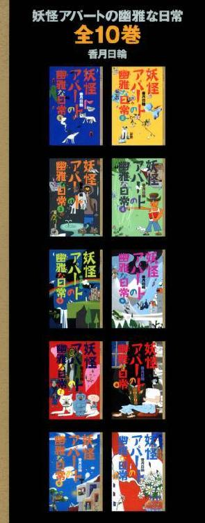
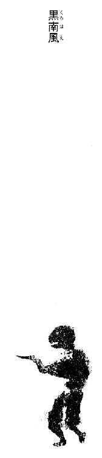
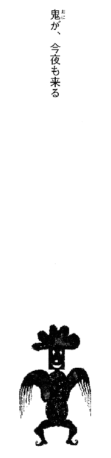
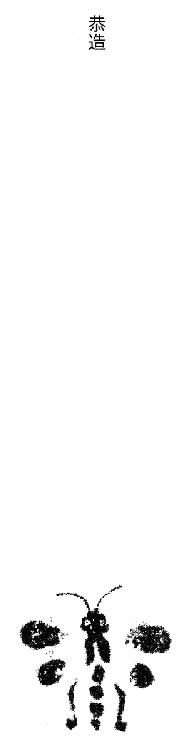
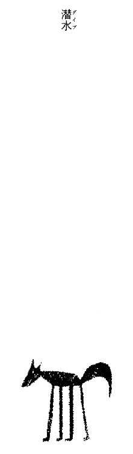
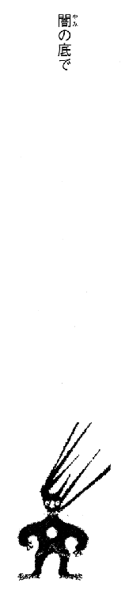
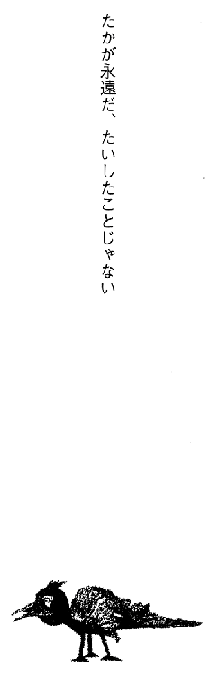
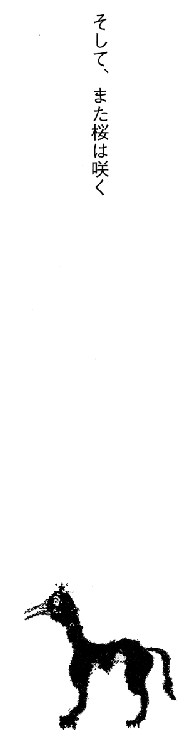

| [香月日輪] 妖怪アパートの幽雅な日常10 | |
| 香月日輪 | |
| (2015) | |
|
妖怪アパートの幽雅な日常⑩
香月日輪
|

〈帯〉
全10巻完結！
大切なことはみ～んな、妖怪たちに教わった！
〈カバー〉
大家さんは黒坊主、食事係は手首だけの幽霊、同居人は気のいい妖怪たちがどっさり、地下に洞窟温泉が湧き、ことあるごとに宴会で大騒ぎ、というアパートで三年間の高校生活を過ごした夕士。いよいよ卒業の春を迎える──。が、タダでは終わらない予感が？
君が、自分で選んだ運命を
どう背負っていくのか......
ずっと見ているよ。
妖怪アパートの幽雅な日常⑩
香月日輪
講談社
ＹＡ！ ENTERTAINMENT
妖怪アパートの幽雅な日常⑩
香月日輪
妖怪アパート寿荘の一年が、また終わった。
大晦日。例年どおり本物のナマハゲたちが大挙してやってきて、俺と長谷は小突かれどつかれ、みんなでぎゅうぎゅうになりながら鍋を囲んだ。
悪いことが、鍋の湯気やみんなの笑い声とともに、晦日の空のどこかへ飛んでいく......「大祓え」だ。今年もいろいろあったけど、今この瞬間が幸せだから、もうそれでいいという気持ちになる。
ナマハゲたちの来訪と前後して、妖怪アパートの住人、骨董屋と古本屋も帰ってきた。世界を股に（世界といってもいろいろだが）商売している彼らは、アパートにいないことも多い。上海帰りの骨董屋は、上海蟹を山のように持ってきた（「上海帰りの骨董屋」なんて、いかにもすぎて笑える。この怪しげな眼帯の外国人は、東洋に縁が深いらしいのだ。それもなんだかしらないが笑える）。
「スゲ───!!」
山盛りの上海蟹に、特に大人ども、詩人の一色黎明、画家の深瀬明、妖怪会社員の「佐藤さん」、妖怪託児所の保母「まり子さん」たちから大歓声が上がった。
「蟹味噌！ 蟹味噌で甲羅酒だ、酒!!」
「やっぱり蒸して、るりるりの特製生姜酢で......かねえ」
「あたし、蟹味噌と豆腐の炒め物がいい！」
「ハイハイハイ！ 蟹チャーハンが食いたいっス!!」
口々にリクエストを言う大人どもに負けじと、俺も希望を述べてみた。クリが俺の真似をして、無言で手を挙げる。その横で、長谷は「俺も蟹味噌で甲羅酒だな」と、こそっとつぶやいている。まあ、お前未成年だろなんて言わねえけどよ。ウルトラハイパービジネスマンになるべく、ウルトラスーパービジネスマンの親父さんから、さまざまな「ビジネスマンとしての手ほどき」を受けている長谷は、酒もとうに知っている。
「蟹味噌と豆腐の炒め物」、そして「蟹の蒸し身」を肴に、大人どもは蟹味噌を紹興酒で溶いた「甲羅酒」を堪能。
「カ──ッ、たまらん！」
画家が絶叫する。詩人も、ラクガキのような顔をほころばせる。
「この芳香......とろけるねえ！」
「蟹味噌豆腐、いくらでも入るー！」
甲羅酒の味はイマイチよくわからん俺も、蟹味噌と豆腐の炒め物の味はよくわかる。淡白な豆腐に濃厚にからみついた蟹味噌、なんとも奥の深い味わい。天才賄い人るり子さんの手によって、蟹の身はすべて丁寧にほぐし出されていて、俺たちはただ食うだけでいいのだ。レタスの上に丁寧に盛られた蒸し身を、るり子さん特製生姜酢で、わっさわっさといただく。なんという贅沢！ そして、蟹の身のたっぷり入った「蟹チャーハンの蟹味噌あんかけ」絶品!!
「ぐおおお～、う、うまいぃい～～～!!」
蓮華ですくうのがもどかしい。皿に口をつけてかき入れたいくらいだ。
「身をちまちま掘らなくていいから助かっちゃうね」
肩をすくめるまり手さんに、俺も長谷もうなずいた。
「タラバ蟹とかなら、殻から身を取り出す醍醐味もありますけどね。タラバは蟹じゃないけど」
「上海蟹は、身が少ないからねえ。その代わりに蟹味噌が美味というわけだ」
そう言いつつ甲羅酒をあおるさまが、実に怪しくよく似合う骨董屋だ。
るり子さんは、蟹料理の他にも、皮がパリッパリ「焼き餃子」、ジューシー「小籠包」、「チンゲンサイのオイスターソースがけ」などを出してくれた。妖怪アパートじゃ珍しい、中華づくし。和洋中、なんでも無敵の料理人るり子さんは、みんなかうまいうまいと言う横で、細く白い指を嬉しそうにもじもじとからませている。
で、大晦日、ナマハゲたちが引きあげた後、忘年会が新年会に切り替わると同時に、今度は古本屋が、でっかい「クエ」を提げて帰ってきた。酒飲みども、大喜び。
「クエ鍋───！」
さっきまで、さんざん鍋を食ってたのに。
「いやさ、これは薄造りだぜ！」
「アラ煮もはずせないー！」
クエはハタ科の魚で、大きくて不細工だがその自身は繊細で美味。高級魚である。
「ちょっと、西日本に行っててさあ」
「今回はインドやアンデスじゃないんスね」
古本屋は、笑って頭をかいた。
「四国で秋音ちゃんに会ってきたぜ」
「元気だった？ って、訊くまでもないかー。元気に決まってるよネー」
みんな笑った。
「何よりも、るり子ちゃんの料理を恋しがってたよ。次にクリと夕士の心配。後のヤツはどうでもいいって感じ」
みんな、さらに大笑い。
アパートの元日の夜は、クエ鍋に決定した。今から楽しみだ。

黒南風
「明けましておめでと──！」
「今年もよろしくー！」
お屠蘇で乾杯し、るり子さんのおせちをいただく。たちまち気分はお正月だ。気持ちが改まる。
薄い雪に染まったアパートの庭を、小さな雪だるまたちがどこかへ行進してゆく。クリとシロが並んで、雪見障子からそれを眺めている。
大勢でおせちを囲む温かい居間。去年あったこと、今年起こること、話題は尽きない。おしゃべりと、お屠蘇と、すましの雑煮で、身体じゅうが内から外から温められた。
「夕士クンと長谷クンも、いよいよ卒業だネー」
詩人が感慨深げに言った。
「早いなぁ。他人の子は成長が早い」
佐藤さんは、細い目をいっそう細める。
「卒業するのは高校だけで、俺はこれからもアパートにいますけど」
俺は後ろ頭をかいた。
「俺もこれからも出入りさせていただきます」と、長谷が言った。大人ども大笑い。
「もう学校には行かなくていいの？」
まり子さんの質問に、長谷が答える。
「必要な単位は二学期までに取れるようになってますので。受験組は、あとはもう卒業式だけですね、登校するのは。センター試験が、もうすぐですし」
「そうそう、ユーシ君は進学して、民俗学を学ぶとか。どういう心境の変化かね」
骨董屋が、一つしかない灰色の目玉を丸くした。俺は、ちょっと赤くなる。
「や......。ここにいたら......どうしてもそっち方面に興味が湧くっしょ？」
「アハハハハ！」
「違えねえ！」
大人どもは、おおらかに笑いとばす。
このおおらかな懐の中で、俺は育ってきた。その成果の一つが、この春に出る。
就職ではなく、進学。俺自身思ってもみなかった、まったく新しい生活が始まるんだ。
（受験に失敗さえしなければ......。うん、大丈夫大丈夫）
呪文のように、自分に言い聞かせる。何度も。何度も。その横で、長谷がおだやかに笑っていた。
ところで、年末年始のすべての予定を蹴りとばして妖怪アパートヘやってきた長谷だが、クリスマスの後、携帯へ入ってきた電話に顔を曇らせた。それは、親父さん、長谷慶二さんからだった。
携帯を閉じた長谷は、ふっとため息をついた。
「どうした？」
「じじぃが悪いらしい」
「あ、やっぱり」
長谷の仏頂面に、俺は苦笑いした。確か去年、いや今年の正月にも、じいさんが入院したという連絡がアパートにいる長谷に入って、長谷は急遽、仙台へ見舞いに行かされたんだ。『なぜもう帰るんだ？』と無言で訴えるクリに、『すぐ帰ってくるから』と言い聞かせた長谷だが、それは受け入れてもらえず、クリは珍しく怒ってすねた。それにショックを受ける長谷は大変おかし......いや、気の毒だった（そしてそれきり帰ってこられなかった）。
「また仙台に行くのか？」
と、俺が問うと、長谷は口をちょっとへの字にして答えた。
「いや......なんか、それほどでもないみたいだ。見舞いに行けとは言われなかった」
「そうか。よかったじゃん」
「ん」
前のことがあるから、長谷は不安というか、用心してるんだろう。
だが、結局それからも、長谷がじいさんのことで呼び出されることはなかった。親父さんも、ひょっとして気を遣ってくれたのかな？
しばらく携帯を横目に「かまえていた」長谷だが、骨董屋が上海蟹とともに現れた頃にはすっかり警戒態勢も解いて、その後のご馳走づくしを心から楽しんだのだった。
元旦。五時。
「今年もよろしくお願いしゃっス！」
俺の霊力トレーナー、猫バアの桔梗さんに新年の挨拶。桔梗さんは、ヒゲの口許をむふっと膨らませた。
「今年も一年、元気でがんばるんだよ」
「うス!!」
アパートの地下洞窟温泉の横。滝場の空気はピリリと引きしまっていた。滝に打たれながらの「初水行」。
今年も、こうして俺の朝は明けてゆくのだろうと思っていた。大学に合格して大学生になっても、妖怪アパートでの生活は変わらず続いてゆくのだろうと思っていた。
修行が終わる頃、滝場の群青の空が黄金に染まってゆく。
去年と同じように、ご来光を拝みにアパートの面々がやってきた。去年と同じように、長谷と並んで初日の出を眺めた。俺たちは笑い合った。去年と同じように。
ひと寝入りしてから、午後近くに起き出した。
「やけに暖かいな」と、長谷が言った。俺もうっすらと汗をかいていた。
窓を開けてみると、空はどんよりと曇っていて、生暖かい風がゆるく吹いていた。まるで梅雨の前のような、湿っぽい元日だった。
「変な天気......」
昨日の夜は雪がちらついていたのに、一夜明けてこの暖かさ、そしてなんだか生臭いような風は薄気味悪かった。
「第一、しまりが悪いよな。せっかくの元日なのによ」
「そうだぁ、もっとこう、滝場の空気みたいにピリッとしてくれないとなぁ。一年の初めなんだから......」
などということは、寒ブリの刺身と白味噌仕立ての雑煮の昼飯を前に、一瞬でどうでもよくなった俺と長谷だった。
「こうご馳走続きじゃ、絶対太るよなぁ～」
しかめっ面をしつつも、箸は止めない長谷。
「今夜は、クエ鍋だしな！」
「あのクエはうまそうだ」
十二時間以上飲み続けて、さすがの不良大人どもも部屋で爆睡している。アパートの居間は静かだった。るり子さんが活けた花、松の緑に南天の赤がとても鮮やかだ。
小さな七輪の上で、餅がぶくぶく膨れている。クリがそれを熱心に見ている。餅の香ばしい香りが漂っていた。シロが、ホットカーペットの上で気持ちよさそうに伸びている。
俺と長谷は、音を小さくしたテレビの正月番組を見るともなしに見ていた。
そこへ、居間の入り口に突然、黒い人影が現れた。
「龍さん!?」
妖怪アパートの住人、「多分人間」の龍さんだった。高位の霊能力者だという龍さんも、アパートにはあまりいない。いつも「仕事」で出かけている。どんな仕事をしているのか、俺にはさっぱりわからないが。
「やあ、明けましておめでとう。長谷くんも」
「どうしたんスか、なんか......」
俺は、思わず龍さんに駆け寄った。
黒い上下に身を包んだ、この長身痩躯の霊能力者は、ハンサムでまるで芸能界の人間のようだが、それだけではない高い知性と深い教養のある人だ。特殊な能力者たる特殊なオーラもある。『君の人生は長く、世界は果てしなく広い。肩の力を抜いていこう』と教えてくれたのもこの人だ。
ところが、今日の龍さんはひどく顔色が悪かった。げっそりと痩せたようにも見える。いつも現れる時は、そこらにいる物の怪どもがサーッと散ったり道をあけたりするようなパワーある人なんだが、今日はなんだかヒョロッとしている。
龍さんは、るり子さんがいれた熱い梅昆布茶を一気飲みした。
「あー、うまい」
疲れたように、龍さんは言った。クリが餅を差し出した。
「何、食べろって？ ハイハイ、ありがとう」
「どうしたんですか？ 痩せました？」
長谷も心配そうに問う。龍さんは苦笑いした。
「ちょっと大きな除霊の仕事があってねえ。しばらく寝込んでいたんだ。十日ほど絶食状態だったから、ちょっと痩せたかな」
俺たちには、何も想像できない。除霊も、十日も絶食状態で寝込むほどの何かあったのかも。
龍さんは、寒ブリの刺身と白味噌の雑煮とおせちの残りを白飯で、それはそれはうまそうに食べた。
「久しぶりのまともな食事だ。生き返るよ。この赤蕪の漬物......たまらんなぁ」
「古本屋さんがクエを持ってきたんで、今夜はクエ鍋っスよ」
「そりゃあ、楽しみだ。どんなに絶不調でも、ここで食って寝たらすぐに回復するから助かるよ」
「そっスよねー」
「わかります」
俺も長谷もうなずく。
龍さんは、すごくよく食べた。クリが焼いては差し出す餅も、雑煮に勝手に入れたのも、残らず食べた。それから「さぁ、寝るぞ」と言って、部屋へ引きあげていった。
「あんな龍さん、初めて見た」
「あの人が、あれだけ消耗するなんて、いったい何があったのか想像を絶するな」
「アニメみたいなバトルがあったとか!?」
「そうかもな」
ちょっと見たい気がする。
「ハッピーニューイヤーでございます、ご主人様、長谷様」
テーブルの上に、『小ヒエロゾイコン』の案内人「０のフール」が現れた。
「フール」
「黒の魔道士殿は、ずいぶんお疲れのご様子でしたなぁ。いつもの霊圧をまったく感じませんでした」
「は～、やっぱり消耗しきってるんだ、龍さん」
「そうだ、稲葉。お前、ヒーリングとやらはやれねえの？」
「龍さんに？」
長谷に言われて、俺はキョトンとした。
「やれねえことはないと思うけど......」
「けど？」
「なんか、畏れ多くね？」
「......そーいうもんかねえ」
フールが、チッチッチと指を左右に振った。
「黒の魔道士殿のような大きな器の方に、迂闊にヒーリングするのは危険でございます。こちらの力をすべて吸い取られてしまうやもしれませんぞ」
俺と長谷は顔を見合わせた。
「あー」
「いかにもそんな感じはするな」
「魔道士殿のような方の治療は、やはり専門家があたらねばなりません」
「藤之先生みたいな？」
神霊科のある病院「月野木病院」の医師藤之先生は、秋音ちゃんの師匠でもある。
「クリ、餅持ってどこへ行くんだ？ ダメだよ、龍さんの邪魔しちゃ」
長谷に止められたクリが、「せっかく焼いたのに」みたいな顔をしたので、餅は俺たちで食べた。腹がパンパンだ。
苦しくて動きたくても動けない身体をホットカーペットの上に転がし、また俺たちは見るともなしにテレビを見たり、うとうとしたりした。ああ、なんて幸せな正月だろう。あ、そうだ。初詣に行かなきゃ。でも動けない。
そうしてどれぐらいたっただろう。
「......地震？」と、長谷が唐突に言った。
「揺れたか？」
俺は何も感じなかった。テレビのチャンネルを替えたりしてみたが、地震情報も何も出ていなかった。
「気のせいかな？」
長谷は頭をかいた。
そして夜が来て、「飲み力」を取りもどした不良大人どもと「クエ鍋」大宴会が始まった。
「普段いない仲間が揃ってるところが、お正月らしくて嬉しいな。カンパ──イ!!」
詩人の音頭で乾杯。大人どもはそれぞれ、日本酒、ビール、焼酎と好きな酒を掲げる。龍さんも、ずいぶん顔色が戻って元気になっていた。さっそく日本酒を片手にしている。
二十キロもあったというクエ。まずは、刺身。ぷりっとした綺麗な白身が、薄青の皿に載せられ、菊花が添えられている。気分は高級料亭だ。
「脂がのってるー！」
「鯛に似てますねえ。鯛を全体的に濃くしたような感じだ」
「クエはコラーゲンも多いんだよー」
佐藤さんにそう言われて、まり子さんの顔がほころぶ（幽霊だけど）。
続いて「煮つけ」。これがまたうまい！ 少し硬めの身に、しっかりと味が滲みこんでいる。俺は、刺身と煮つけで飯をもう二杯も食ってしまった。いかん、セーブせねば！ まだ「前菜」だ。
酒の肴にピッタリ「内臓のみぞれ和え」。心臓などの内臓を煮て、おろし大根と特製ポン酢で味つけしているらしい。コリッとした歯ごたえで、ちょっと苦味がある。
「これ、たまらんなー！」
酒飲みどもは、声を揃えた。ビール組は「唐揚げ」に唸る。
「これもたまらんなー！」
サクッとした衣、ふっくらした白身が、旨み汁とともにじゅわっと口の中へ広がる。香ばしい香りが鼻へ抜けていく。サッと振られた塩が、また絶妙にいい味だった。
「たまらん......」
長谷の顔もゆるみっぱなしだ。
「本日のメイン、クエ鍋でーす！」
古本屋と佐藤さんが、それぞれに鉄鍋を提げてきた。
「イヨ──ッ、待ってました！」
拍手喝采。鍋の温かさで、たちまち居間の温度が上がる。
たっぷりの野菜、たっぷりのクエの身。だけど、みるみるなくなっていく。アパートの酒飲みどもは、酒も飲むけどよく食べるんだ。
「身がプリップリだー」
「見ろ、ここ。コラーゲンの塊！」
俺と長谷が食べようとしていた身を、古本屋が横から取りあげた。
「若い奴が、それ以上肌をプリプリにしてどうする！ 年寄りによこせ！」
「あっ、年寄りって認めるんスかー！」
「認める！」
「汚ぇ！」
「ヒデーー」
俺たちはクエを取り合った。みんな大笑い。
元日ということを忘れるほど、いつもとまったく変わらない妖怪アパートの夜。
奇妙にぬるかった昼間の空気も、しんしんと冷えてきた。夜の闇に、雪の結晶の形をしたモノたちが静かに降る。
テーブルいっぱいに並んだご馳走を贅沢につつきながら、それぞれがいろんなことをしゃべる。仕事のこと、プライベートなこと。俺や長谷にはわけがわからない専門的（？）なことも。骨董屋や古本屋の、ウソかホントかわからない話は面白かった。
「そういや、骨董屋さん。奇跡狩りの連中からは、首尾よく逃げられたのかい？」
古本屋が、笑いながら問うた。そうだ。そんなこともあったなぁ。
「この世」のものではないもの、その中でも、奇跡と称して人々を惑わせるようなものを回収する専門機関が、なんとヴァチカンにあるらしい。ここらへんになると、俺なんかはもう話半分で聞いていてちょうどいいくらいだ。
「連中に追いつかれた頃には、ブツは依頼人に渡っていたのでね。知らぬ存ぜぬを通すまでだよ」
骨董屋も笑いながら返す。
「稲葉の持っている『プチ』は、奇跡狩りの対象にはならないんですか？ 今さらですけど」
と、長谷が質問した。骨董屋は片眉を上げた。
「奇跡狩りが狩るのは、主のいない魔具だ。特に、素人の手に渡るのを阻止するのが最大の任務。魔道書には、たいてい主がいるからね。狩りの対象にはならない。また、素人のもとでは魔力は発動しない」
そうか。「プチ」はそうやって、長い間ヨーロッパあたりをさまよっていたんだ。
「ヴァチカンも勝手だよねえ。キリスト教系の奇跡は認めるけど、それ以外で出現する奇跡は認めないってんだから」
古本屋のセリフに、大人どもがみんなうなずく。
「古本屋さんもヴァチカンの地下に連れてかれたことあるんでしょー」
「すんごいよ～。世界中から集めた、霊具魔具の展示会場みたい」
「本家『ヒエロゾイコン』があるというのは本当かね？」
「いやいや。ありや、写本だね」
「『ヒエロゾイコン』に封じられた妖魔は七十八匹が公式らしいが、七十二とも言われるね。どれが正しいのかね？」
骨董屋が龍さんに話を振った。龍さんは肩をすくめた。
「諸説あるみたいですね。七十六という説もある」
魔道士たちは、世間話のように不思議を語る。この世には、俺や長谷には計り知れない世界が重なっている（俺が魔道士の端くれなのは置いといて）。この妖怪アパートや月野木病院のような場所が、日本にだけでもたくさんある。世界には、もっとたくさんあるのだろう。
俺や長谷、そして詩人や画家も、そういう世界や場所とはこれからもあまり縁がないだろう。俺たちは、ごく普通の生活を送っていく。
でも俺たちは、「世界は果てしなく広い」ということを知っている。自分が「果てしなく広い世界に生きている」ということを、知っている。
クエ鍋の仕上げは「雑炊」！
「うっわ、もう......サイコ──!!」
喉がゴロゴロ鳴るようなうまさ！出し汁の中に、クエと野菜の旨みがこれでもかというほど出ている。それを飯ごと包みこむ、卵の優しさよ。
「あんだけ食ったのに、これいくらでも入るよ」
また、るり子さん特製の「キャベツのぬか漬け」が......たまらん。これと雑炊をおかずに白飯を食いたいくらいうまい。海外にいることが多い骨董屋と龍さんが、うまさに絶句して固まっている。詩人の言葉を借りれば、全員「蒸すしたての餅」のような顔になった。し・あ・わ・せ。
それからも、大人どもは酒を飲みながら、俺と長谷はコーヒーを飲みながら、宴会は延々と続いた、いつものように。るり子さんは、俺と長谷とクリに、チョコレートをうっすらとからませた「あられ餅」を出してくれた。これがまたうまくて、また止まらない。まったく、どんだけ食うんだっての。後で胃腸薬を飲んでおこう。
龍さんが、げっそり痩せた事件のことを話してくれた。
「あるタレントが、テレビの取材でメキシコのとある遺跡に行ってね、どうもそこでナニかを拾ってきてしまったんだな」
それは、俺も知っているわりと名の知れた女性タレントだった。そういえば、最近姿を見なかったな。
「取材の中で、よくない場所へ立ち入ってしまったらしい」
「これだから素人は......」
古本屋がため息をついた。続いて骨董屋も首を振る。
「あのあたりは危険だ。霊的にまだ手付かずといった状態だからねえ」
「そーそー。原始的な場所って、やっぱ怖いよな」
みんな興味津々で聞く。
「取材から帰ってきた頃から、タレントの身に幻覚や身体異常などが起きはじめてね。私のところに依頼が来た時には、半年がたっていた。ブロマイドを見せてもらったんだが、私が会った人物はもう別人だったね。女性とも呼べない顔になっていた」
「『エクソシスト』のリガンちゃんみたいに？」
まり子さんが、大きな目を見開いて言った。龍さんは、ちょっと考えた。
「......いや、あれは......あれ......なんだっけ、佐藤さん？ サム......サム・ライミの」
「ひょっとして、『死霊のはらわた』？」
映画大好き佐藤さんが、細い目をキラリと光らせた。
「そう、『死霊のはらわた』！ あの、死霊に取り憑かれた人間みたいな顔だったよ」
「それ、キモイー」
「髪の毛を振り乱して、顔が青黒く倍ぐらいに腫れあがって、両目とも完全に白目を剥いて、唇は真っ黒で、ずーっと緑っぽい液体を垂らしてたよ」
全員「ヒーツ」となった。
『死霊のはらわた』は、俺も長谷の家で見たことがある。だいぶ古い映画だが、スプラッター映画にもかかわらず、どこかアニメみたいで面白かった。素人がウッカリ悪霊を解き放ってしまい、それに取り憑かれてしまうという内容だ。
（でも......そんな映画みたいなことが、現実に起こるなんて）
アニメみた～い、なんて言っていられない。ゾッとする話だ。
女性タレントは変わり果てた姿になったものの、映画のように暴れたりすることはなかった。わけのわからない言葉をブツブツと吐き出したり、部屋の中をウロウロする程度だった。食事はしたりしなかったり。
「でも、食べる時は獣のようだったよ。排泄は、なんとかオムツをつけてくれたらしいが、それでも充分悲惨だ。まだ二十歳そこそこの女性なのに。おまけに、なんとも獣臭い臭いがした」
医者には治せない病......。家族の苦悩を思うと気が重くなる。
「お前がそんなに消耗するなんざ、よっぽど強いヤツだったのか？」
画家の問いに、龍さんは首を振った。
「いや、一発で祓うことは祓えたんだ。ただ、その後がいけなかった」
龍さんは、悪霊を「つぶした」らしい。いや、龍さんの力で、「悪霊がつぶれた」といったほうがいいのかな？ 霊的なモノが、つぶれるという「物理的な形」をとって現れる......ややこしいが、こういうことはままあるらしい。
で、タレントの身体から、その「つぶれた悪霊」が血液のように噴き出して、龍さんはそれをモロに浴びてしまった。
「これがまあ、高濃度廃液のようなものでね。ものすごい瘴気を発するんだ。それに侵食されないように霊力が対抗するから、冬山で遭難して体温を奪われるがごとく、力がどんどん消耗していくんだよ」
もちろん、これは水で洗い流せばすむという話ではなく、龍さんは専門家のもとに行って、「穢れ」を祓うことになった。「禊」だ。十二月の、この年一番の寒さが訪れた夜中、降りしきる雪の中で、なんと六時間もの滝行が行われた。全員、再び「ヒーッ」となる。
「あの日の夜仲に、滝行六時間!?」
「ここらへんでも、最低気温がマイナス五度とかじゃなかったっけ？」
「さすがに震えました」
そりゃ震えるだろう！
「やー、寒さに震えるなんて、何年ぶりだったかなー。十年ぶりぐらい」
......こういう人だ。
「滝行のおかげで穢れは祓えだけど、今度は精神力が尽きかけちゃってね、それ以上消耗しないように、十日ほど冬眠したんだ」
「冬眠？」
「心を完全に閉じるんだ。ちょっとでも感じたり考えたりしないように」
龍さんは、専門家のもとで約十日間、精神力がある程度回復するまで完全休眠していたらしい。これは「眠る」こととは違って、どうも「身体をロックする」みたいな？治癒法の一種とか。
女性タレントのほうは、除霊が終わったその日から顔の腫れが取れ始め、大晦日に龍さんが連絡を受けた時には、すっかりもとどおりの顔に戻ったらしい。彼女自身の意識も回復した。ただ、悪霊に取り憑かれていた半年の間に、彼女もずいぶん体力、精神力ともに消耗していて、芸能界に復帰するにはもう少しかかるとか。
「その悪霊は、どんなモノだったんですか？ 獣臭いというと、獣神とか？」と、長谷が質問した。
「獣の霊だろうね。妙に力があったところを見ると、大昔に神として崇められたものが零落した成れの果てかもしれない」
「なるほど。あのあたりには、いかにもいそうだ」
骨董屋が、シガリロをくゆらせる。
「別にね、あの霊も人間を呪ってやろうとか思っていたわけじゃない。そんな明確な〝意志〟は持っていないんだ。ただ、ああいう。〝力〟があの場所にあって、女性タレントは、たまたま遭遇してしまったにすぎない。とはいえ、行ってはいけない場所へ行ったんだろうとは思うけどね」
龍さんは、苦笑いして肩をすくめた。
「畏れがないよねえ」
詩人がため息。
「まったくです」
「禁忌の場所」が、どうして禁忌なのかを考えない迂闊者は多い。「お化けが出る」と言われている場所のすべてを信じる気にはなれないけど、なぜ「神がおわす場所」や、「殺人事件があった家」に、ズカズカと平気で入っていけるのかわからん。
古本屋も、チビた煙草をふかしながら言った。
「たいがいの場合は、なんてことないんだよ。でも、誰かは必ず霊障にブチ当たる。その誰かにならないために、やっぱり禁域には入ったらダメなんだ」
「心霊スポット巡りって、本まで出てるよねー」
「バカだよなぁ。火遊びの一つぐらいにしか考えてないんだぜ、アレ」
「子どもが、死から遠ざかったせいだろうねえ。死から遠ざかることは、生からも遠ざかることだからねえ」
詩人の言葉は、今年も深い。
「大人は、もっと子どもに死を教えなきゃダメだよネ」
「おっしゃるとおりです、一色さん」
午前三時。
俺と長谷は、腹パンパンの状態からやっと動けるようになったので、宴会から抜け出して風呂に入った。
「身体じゅう、鍋臭え～。下着まで！」
「九時間ぐらい鍋の傍にいたからなぁ」
俺たちは、笑いながら身体を洗った。温泉に首までつかると、同時にパーッと大きくため息をついた。
「あ～、やっぱりいいなぁ、ここは」
長谷がしみじみと言う。俺は「ふふん」と鼻を鳴らした。
部屋に戻ると、布団の上でクリとシロが饅頭のように丸くなって眠っていた（クリが餡子で皮がシロ）。
クリを布団にちゃんと寝かせていると、部屋に置きっぱなしにしてあった携帯を見ていた長谷が、「あ」と声を上げた。
「どうした？」
「......じじぃが死んだ」
「えっ!?」
「夕方の四時頃だってよ。親父には六時頃に連絡が入ったって」
「六時っていうと、もう宴会が始まってたな。で？ 親父さん、お前に帰ってこいって？」
「いや、仙台へは自分が行くってさ」
「そりゃそうか」
「ま、とりあえず明日は家に顔出すけど」
「俺も、昼は伯父さん家に行かなきゃ。あ、その前に初詣行こうぜ」
俺たちは、それぞれ明日の着る物の用意とかをした。
「そういえば、長谷！」
「なんだ？」
「じいさん亡くなったの、四時頃だろ。お前、その頃地震が来たって言ってたよな」
「......ああ、そういえば」
「あれって、虫の知らせってやつじゃねえの？」
長谷は、盛大に肩をすくめた。
「あのクソじじぃが、俺に何を知らせにくるって？ どうせロクでもねーことに決まってるぜ。三途の川の渡し賃をよこせとかな。そんな知らせなんざ、聞きたかねー」
エライ言いようだ。
長谷の父方のじいさん。つまり慶二さんの父親、長谷恭造は、隠居して長いんだが、かつては財界の怪物とまで言われた人だ。一代で財を成し、多くの系列会社を抱えた長谷財閥を作り上げた。それは、結局は他の有名大財閥と肩を並べるまでにはいたらなかったが、財界での恭造御大の影響力はなぜか絶大で、誰も逆らえなかったらしい。唯一、御大に逆らったのが、慶二さんだった。慶二さんは早くから本家を出て、裸一貫で今の地位を築いた。怪物とまで言われた御大の「商才」を本当に受け継いだのは、長男の叡仁さんではなく、実は慶二さんだったんだ。じゃあ、なぜ慶二さんは自分で会社を立ち上げるとかしていないのかというと、でかい会社の裏方（実質ナンバー２。社長を「あんた」呼ばわりできるのは、慶二さんだけ）として「暗躍」するほうが楽しいからだそうだ（長谷談）。ここらへん、実に長谷の親父だなぁという気がする。
とすれば、慶二さんが長谷本家を出ることなく、叡仁さんの「懐刀」として働いていれば......長谷財閥は今よりももっとでかく成長していたに違いない......と、恭造御大は思っているはずだ。
そのせいか、慶二さん一家は本家から疎まれ、ほぼ絶縁状態。盆正月のご挨拶などは、すべて一家の一番下っ端である泉貴坊っちゃんに押し付けられ、坊っちゃんは本家で針のむしろに座らされ続けてきた。
「とうとう死んだか」
長谷は、軽く言った。
「また大騒ぎだな」と、俺は言ったが、長谷は、
「関係ないネ」
と、また軽く返した。
御大の莫大な遺産相続権を放棄している慶二さん一家にとっては、御大が死んでもどうということはない。葬式に顔を出してハイ終わり、なんだろう。
長谷としては、これでようやく針のむしろから解放されることになる。せいせいしたってとこか。
長谷の態度もどうかと思うが、死んで惜しまれない生き方はしたくないもんだ。「いい人だった」と涙されるのが理想だけど、せめて「せいせいした」なんてことだけは言われないよう、心がけたいと思う。

鬼が、今夜も来る
それから、たった四日後だった。
明日には家に帰ろうとしていた長谷に、お袋さんから緊急の電話が入った。
長谷の姉貴、汀さんが倒れた。
汀さんは、勤め先の商社で仕事中に急に具合が悪くなり、救急車で病院に運ばれたんだ。
お袋さんからすぐに来てほしいと言われ、俺たちは病院ヘバイクを飛ばした。
「あの汀が救急車で運ばれるなんて考えられん。盲腸じゃないのか!?」
と、長谷は言った。
「うちの女どもはバケモノ」と、よく長谷は言う。家族旅行によく行く長谷一家......といっても、仕事が忙しい慶二さんはほとんど参加しないけど。したがって、お袋さん瑞羽さんと姉貴汀さんの面倒を見るのは長谷で（いや、それは慶二さんがいても同じか）、旅行先で遊び倒す馬力のある女二人に、長谷はツアコンも真っ青になるぐらいコキ使われる。
かたや大物政治家の娘で名門のお嬢さん育ちで、ふわっと柔らかくてとても可愛い女性だが、実は図太く、行動力がある瑞羽さん。こなた、涼やかで聡明な美人だが、ガッツと腕っぷしは父譲りの汀さん。合気道有段者で、長谷はこの姉にケンカでも合気道でも勝ったことがない。「長谷家の跡取り息子」であるにもかかわらず、生まれた瞬間から姉と母の奴隷として生きていた泉貴坊っちゃんだ。
実際、長谷は心配はしていなかった。どうせ盲腸か、急性胃腸炎か、そのへんだろうと。
俺も深く考えていなかった。汀さんが、黙って立っていれば一輪の赤い薔薇のような上品で華やかな美女であるにもかかわらず、弟をゲンコで殴りつけるような「姉貴」と知っていたからだ。救急車で運ばれたといっても、きっとたいしたことはないだろう。
しかし、病院で長谷を待っていた瑞羽さんの顔色は、青ざめていた。
汀さんは、ベッドの上に顔をしかめながら横たわっていた。
「お腹に大きな影があるんですって」
瑞羽さんは、丸い瞳を不安そうに瞬いた。
汀さんは、今朝はしきりに身体がだるいと言っていたそうだ。腹部に妙な違和感があり、重苦しいような感じがしたと。そして出社してしばらくして、急に腹部に激痛を訴え、動けなくなってしまった。
レントゲンを見た医者は、腹部に妙な影があることを不思議に思った。
ただちに、もっと精密な検査が行われた。今は、その結果待ちの状態だ。
「最初はね、子宮筋腫かもって言われたの」
女性の多くが持っていると言われている子宮筋腫。腫瘍の一種だがそれは良性のもので、よほど大きくならないかぎり危ないものでも怖いものでもない。ある日突然痛くなるまで、腫瘍が大きくなっていることに気づかない人も多いという。
「でも、影のあるところが子宮じゃないかもって......」
長谷は、ちょっと顔をしかめてこそっと言った。
「子宮外妊娠じゃないのか？」
そのとたん、長谷の後ろ頭めがけて枕が飛んできた。
「三日前に生理が始まったばっかりよ！ 言わすな、こんなこと！」
汀さんが、痛みに耐えながら鬼のような形相で言った。瑞羽さんが枕元に駆け寄った。
「汀さんったら、安静にしててちょうだい」
「うー、苦しい......。気持ち悪い......。なんか、お腹をぎゅって握られてるみたい」
汀さんは、いやいやと首を左右に振った。
俺は、病気を治すことは無理でも、せめてヒーリングで苦しみぐらいは取れないだろうかと思った。でも、汀さんの身体に「ダメージ」は見えなかった。
（......ということは、ヒーリングはできないってことだよな）
フール曰く「身体の相性が合わない」ということだ。田代や千晶にできたのは、たまたまなんだ。
「泉貴！ 家に行って、アンゴラの毛布とカーディガン持ってきて！ 寒いわ。それと、ｉＰｏｄ。靴下も！」
ベッドの上から、汀さんが奴隷に命令する。長谷のこめかみに、うっすらと青筋が立った。俺は吹き出しそうになった。
「汀さん、後からまとめて持ってくるから。下着とかタオルとかもいるだろうし」
と、瑞羽さんは言ったが、汀さんは譲らない。
「すぐ欲しいの。寒いんだもん！」
長谷が苦くため息をついたところへ、慶二さんがやってきた。
「なんだ、なんだ、汀？鬼の霍乱か？」
「ちわス？」
「お、夕士！ さっそく見舞いに来てくれたのか。すまんなぁ」
会社から駆けつけた慶二さんは、いつものようにカッコイイ。高級スーツに、時計なんかの小物も決まっている。長谷が、ライバル登場にきゅっと顔をしかめた。
（心配しなくても、二十年後にはお前もこうなってるって）
長谷のしかめっ面を見ながら、俺は思った。
「慶二さんっ」
不安そうにすがってくる瑞羽さんを、慶二さんが両手を広げて胸に包み込んだ。
「医者はなんだって？」
「今、精密検査の結果待ちなの。お腹に大きな影があるって」
「大丈夫だ。たいしたことはないさ。なあ、汀」
「イチャつくなら外でやって！」
そして慶二さんは、こそっと言った。
「妊娠じゃないのか？」
もとに戻った枕が、再びゴオッと飛んできた。慶二さんが、間一髪、顔の前で受け止める。
「うおっ！ 元気だな」
「それ、結城さんに言ったら承知しないわよっ！」
さっきよりもすごい形相で、汀さんが吠えた。
「汀さんっ、もう！」
「うーっ、イタタ......！」
汀さんは、慶二さんの第一秘書、結城一馬に片思い中（長谷情報）。
そこへ、担当医が来た。
「ご家族の方、よろしいですか？」
みんなが医者の話を聞きに出ていく。
「稲葉、いてくれるか？」
「おう」
俺は、汀さんの枕元に座った。
「なんか欲しいもん、ないっスか？」
「お水ちょうだい」
汀さんは、少し身体を起こし、コップの水を苦しそうに飲んだ。顔色が悪い。青白い肌に黒い目が映えて、いっそう黒く見える。
「新年早々、ついてないっスね」
俺が軽く言うと、汀さんは苦く微笑んだ。
「まったくだわ。もー、今年はサイテー。元日から嫌な夢は続けて見るし。あれが初夢だとすると、まさしく正夢になったってわけね」
「嫌な夢を続けて？」
「うん。昨日まで四日連続同じような夢よ」
「............」
そんなことがありうるのだろうか？奇妙な感じが胸の底から湧いてきた。
「ちなみに......どんな夢スか？」
汀さんは、嫌そうに目を細めた。
「嫌な夢よ。ホラー映画みたいな感じ。玄関のドアを誰かがドンドン叩くからドアを開けるとね、そこに鬼がいるの」
「鬼......スか？」
「そう。鬼よ。あの般若のお面みたいな顔で、角がおでこから二本生えてるの。私、悲鳴を上げて飛び起きたわ」
（この汀さんが？）
「この汀さんが悲鳴を？ って思ったデショ」
俺は、プンプンと頭を振った。
「ああ、イヤ！ 玄関に鬼がいたら、誰だって悲鳴を上げるっスよ」
「その時は、なんでかもうすごく怖かったの。起きても胸がドキドキしてたわ。で、二日目はね、やっぱり玄関に鬼が来て、私は腕をつかまれるの」
「............」
「三日目は......今度は、私の部屋に鬼が来たのよ。ドアがドンドンって叩かれて、ドアを開けるとそこに鬼がいるの......」
「同じ鬼っスか？」
「うん」
ざわざわと、粒子の粗い霧のようなものが背中を這う感じがした。
「昨日は......？」
「昨日は......」
汀さんの表情がいちだんと曇る。
「部屋に入ってきたわ。そして私は、また腕をつかまれた......。それ以上は......それ以上は恐ろしくて、私はそこで飛び起きたの。わかるでしょ？」
汀さんの黒い目で見られて、俺は息を呑みこんだ。夢の中だろうと、鬼に「それ以上何かされる」前に、汀さんは自力で飛び起きた。生々しい悪夢だ。
「これって......何かのストレスかしら？ 秋に健康診断を受けたばかりよ、私。別に異状とかなかったのに......。私......鬼に何かされるような夢見るぐらい欲求不満なの!? やっだ！ これ、結城さんに絶対内緒よ」
俺は曖昧な笑顔でこくこくうなずいた。
欲求不満なんかで片付けられるはずがない。同じ内容で、進行形の夢を連続で見るなんて。しかもその禍々しい印象は......これは、何かの「暗示」とか「予兆」なんじゃないだろうか？
「トイレ行ってきまっス」
俺は、病院の屋上まで駆け上がった。
誰もいない屋上で、「プチ」を取り出す。
「フール！」
「ご機嫌うるわしゅう、ご主人様」
おおげさにお辞儀をしながら、フールが「プチ」の上に現れた。
「汀さんの様子を見ただろ。あれって......何か......普通の病気じゃないんじゃないか？」
「さよう。非常に禍々しい何かを感じますな」
「やっぱり！ って、それが何かを訊いてんだよ！霊障ってやつか？」
「さあて。どうもハッキリしませんな」
フールは、短い腕を組んだ。
「ノルンたちに占わせてみましょうか」
「......あのバカ姉妹にか!?」
「バカ姉妹とは手厳しい！ いやいや、あれでも〝運命の女神〟の眷属ですから！」
「プチ」の「Ｘ」のページを開く。
「運命の輪！ ノルン!!」
青白い閃光とともに、三人の女神と黒い甕が現れた。
「お呼びでございますか、ご主人様」
白い布をまとった女神っぽい格好で、俺の前に深々と膝を折る姿はソレっぽいんだが、スクルド、ザンディ、ウルズのこの三姉妹は、とにかく仲が悪いのがその最大の特徴だ。三人で力を合わせて甕を覗いて占いをしなきゃならないのに、口喧嘩ばかりしている。
「あー、えーと......汀さんの病気の原因がなんなのか占ってほしいんだけど」
「かしこまりました」
三人は、しずしずと甕の脇に立ち、占いに入る。
（おお!? 以前とだいぶ違う感じがするけど、これってひょっとして俺の霊的レベルが上がったってことなのか!?）
と思ったとたん、
「痛って！ てめ、ウルズ！ 人の足踏んでんじゃねぇよ！」
「踏んでないもん！」
「踏んだだろうがよ！ ばっくれてんじゃねぇよ、このクソアマ！」
ザンディとウルズが、つかみ合いの喧嘩を始めた。
「占いに集中しなさいよ、あんたたち！」
スクルドがヒステリックに絶叫した。
「相変わらず仲の悪いことで、イヤハヤ」
フールが大きく肩をすくめる。呑気なお前にも殺意が湧くぞ。
ぎゃあぎゃあ言い合いながら、なんとか占いをすませた女神たちは、すまして言った。
「何かドロドロしたものを感じます」
お前らの答えは、それしかないのか!! ってか、俺の力がそれしかないのかと思うとへこむわ！
だが、女神たちを「プチ」に戻してから、俺は思った。フールは「どうもハッキリしない」と言った。女神たちは「何かドロドロしたもの」と言った。
「これって......あの時と同じ？」
条東商の講堂の屋根裏部屋に巣食っていた「学校の怪談」の正体は、そこで女を呪っていた奴の「念」だった。呪いの念は、本人がいなくなってもそこに残り、自らの意思を持って、自由に動き回れる「身体」を待っていた。
「汀さんの病気って、汀さんの......あるいは誰かの〝念〟の塊ってことか......？」
俺は、盛大に首をひねった。何が何やら全然わからなかった。
病室に戻ると、廊下の向こうから、ちょうど長谷も戻ってくるところだった。
「は......」
と、声をかけようとして、その表情の暗さにハッとした。瑞羽さんが、がっくりと慶二さんに寄りかかっている。慶二さんは俺を見ると、苦笑いして手を上げた。
「長谷......」
「アパートに送るよ、稲葉」
俺と並んで歩く長谷の横顔が、冷たく凍っている。目がどこも見ていない。
「汀さん......悪いのか」
思い切って言ってみた。
長谷は立ち止まった。
「手術できないそうだ」
冷静な声だった。
「でかい腫瘍が子宮の横に貼りついてて、子宮ごと取っても大出血するのは間違いないそうだ。動脈やら神経やらをからめてるらしくて」
「じゃ......どうするんだ？」
長谷は、静かに首を振った。
「わからん......。今のところ、なす術がないと言われた」
（じゃ、汀さんはあのまま......苦しむだけ？）
「レントゲン写真に写った腫瘍がな......まるで胎児みたいに見えた。ゾッとしたぜ」
その言葉を聞いて、俺もゾッとした。全身総毛立つようだった。
「は、長谷......！」
俺は、思わず長谷の手を取った。
「なんだ？」
「あ......あのな......あの......」
汀さんの見た悪夢。ドロドロした、正体のわからないもの。
「変なことを言うようだけど......怒らないでくれ」
「どうした？」
「これって......汀さんの病気って......霊障じゃないか？」
長谷は、「は？」という顔をした。それから俺のほうへ向き直り、俺の手の上へ自分の手を重ねた。
「稲葉。全部を霊や妖怪のせいにするのはどうかと思うぞ」
「ちが......それはわかってる。でもさっき、汀さんに話を聞いたんだ」
俺は、汀さんの悪夢のこと、ノルンの占いのことを長谷に話した。長谷は複雑な顔をして聞いていた。
「汀は、幽霊の類に興味はないし、ヤバそうな場所とかへ行ったって話も聞かないぜ？」
「誰かの〝悪意〟は？」
俺にそう言われて、長谷は言葉をつまらせた。ふっと、目を伏せる。
「......確かに、妬まれそうな女ではあるな。美人で頭がよくて、地位も金もある家の子で、だから男にモテる。本命には振り向いてもらえないが、言い寄る男は掃いて捨てるほどいるだろうからな。それを妬む奴はいるかも......同級生、同僚......」
「取引先の陰謀とかは？」
長谷は、また「は？」という顔をした。
「親父さんに恨みがある奴が、家族に呪いをかけたとか」
「小説の読みすぎだ、稲葉。あちこちで恨みを買ってることは間違いないクソ親父だけど、あの親父を呪おうなんて」
長谷は、大きく首を振った。
「そうだよ......。現実的じゃない。呪いとかは本当にあるとしても、クソ親父や汀を呪おうなんて、その発想が現実的じゃない。だって、親父や汀を知ってる奴らならわかるはずだ。呪いなんて効きそうにないってな！ ヘタすりゃ、跳ね返してきそうだろ」
............ほめてるんだろうな？
「いやいや、ナイナイ。ありえん」
長谷はまた、大きく首を振った。
「でも俺、気になるんだよ。汀さんの夢の話。フールも禍々しいものを感じるって言ったし......。ちょうど龍さんや古本屋がいるから、訊いてみようと思うんだ」
「ああ......まあ、そりゃ......」
長谷は曖昧にうなずいた。
それから俺と長谷はアパートへ戻り、長谷は急いで荷物をまとめて帰っていった。アパートには、古本屋も龍さんもいなかった。骨董屋は三日にはもう出ていってしまったし、画家も仕事で出ていて、居間には詩人がお茶を飲んでいるだけだった。
「古本屋さんは出てったよ。帰ってくるかどうかは不明～。龍さんなら、藤之センセのとこじゃないの？」
「あ、そうだった」
すっかり体調も戻ったように見える龍さんだけど、毎日藤之医師のところへ行って治療を受けているらしかった。
長谷がバタバタと帰ってしまい、しょげているクリをあやしていると、夕方頃龍さんが帰ってきた。
「ただいま～。あー、お腹すいた」
この頃、龍さんはホントによく食べる。失ったエネルギーを取りもどしてるんだろうなぁ。
「龍さん、ちょ......話いいっスか？」
「いいよ、どうしたの？」
居間でコーヒーを飲みつつ、汀さんの話を龍さんに聞いてもらった。
「夕士クンは、その汀さんの病気が、何かの呪いじゃないかって思うんだ？」
ラクガキのような顔で詩人が言った。俺はうなずいた。
「汀さんの話が、すごく嫌な感じがして......。それと、レントゲンの影が胎児のように見えたって聞いた時、ゾワ～～ッてしたっス。ただ気味が悪いってだけじゃないんスよ、この感じは。何か......何かあるような気がして......」
龍さんは、軽くうなずきながら俺の話を聞いていた。その黒い瞳が泳いでいる。
「千里眼ですか、黒の魔道士殿」
テーブルの上にフールが現れて言った。千里眼？ 千里眼って、こんなに簡単にするもんなのか？「念じる」とか「精神集中」とかもなしに!?
龍さんは、クスッと笑った。
「よく見えるなぁ。君と長谷くんの絆は、よほど深いとみえる」
「えっ、俺を通して見てるんスか!?」
「本人がいないから、君を〝通路〟にしてるんだ」
龍さんは俺を見ていた。でも、その目は俺を見ていない。完全に俺の向こう側を見ている。なんだか身体を見透かされているようで、ちょっと恥ずかしかった。
「......さすが、いい病院に入ってる。豪華な個室だ。......汀さんは、美人だなぁ。長谷くんと目元がよく似てるね」
ホントに見てる！ 何キロも離れた場所にいる汀さんを、この場にいながら見てる！
「あそこは、親父さんと汀さんと長谷が、目元ソックリなんスよ。それ言ったら、二人とも怒るんスけど」
龍さんの表情が変わった。視線が止まる。
「......確かに......これは、通常の病気じゃないな」
「やっぱり」
「でも......霊障でもない。つまり、悪霊が憑いているとかじゃないってことだ。妖怪の仕業でもない......」
龍さんは、少し首を振った。
「............強い念を感じる......。これは......誰だろう？ 誰かいる......」
「幽霊じゃなくて？」
「着物を着ている男......肩までの髪......草履を履いてる......。顔はよく見えないな......。若い......？ 三十歳ぐらい？」
誰のことを言っているんだろう？ 着物を着た三十ぐらいの男？
龍さんが空中を見ながら、おもむろに右手を上げた。
「......書くもの......。何か書くものを......」
俺は、いつも居間に置いてあるクリのお絵描きセットを龍さんに差し出した。龍さんはで画用紙にサインペンで絵を描き始めた、目は空中を見ながら。不思議な光景だった。
「自動書記ってやつだネー」
詩人が面白そうに見ている。
厳密には、自動書記とは、霊が霊媒を通して何かを書かせるということらしいが、龍さんの様子は、まさに自動書記のようだった。何もない空間を見つめながら、手が絵を描く。龍さんは、空間の向こうの景色を写生しているんだ。
「私は絵が得意じゃないんでね......」
龍さんは、絵を前にして頭をかいた。
「明さんがいなくてよかった。プロに見られたら恥ずかしい」
そう言うほど下手でもない龍さんの絵は、その「三十歳ぐらいの男」だった。着物に羽織。草履。髪はざんばらで肩にかかるぐらい。
「これは、短刀？」
詩人が絵を指さした。帯に短い棒のようなものが差してある。
「いや......どうも煙管のようです」
「煙管とは、また古風な......って、いつの時代の人なの？」
「そんなに前じゃないですね」
龍さんはそう言いつつ、煙管に矢印をして「鬼の顔の細工」と書いた。
「鬼......。鬼の細工......」
また、「鬼」。奇妙な符号の一致。
「おそらくは銀細工で、デザインが鬼なんだ。これは、はっきり見える。私がもっと絵が上手なら、細部まで描けるんだけど」
「こいつ......誰だと思うっスか？」
「おそらく、血縁だね」
「血縁!?」
俺は、ハッと顔を上げた。龍さんの黒い瞳と目が合った。
「汀さんを透視すると、この人物が浮かんでくる。汀さんの一件に、この人物が深く関わっているということだ。どのように......までは、今の段階ではわからない」
俺は、あらためて絵を見つめた。
「でも、幽霊とも妖怪とも違うんスよね？ 残るは......やっぱり、念？」
「その可能性はあるね」
龍さんは、小さく息を吐いた。
「念は......特に怨念は、少々ややこしいよ。幽霊や妖怪のように、この呪文を唱えれば捉えることができる、というわけじゃない場合が多いんだ」
そう言って、龍さんは詩人の膝でうとうとしているクリの頭を撫でた。
クリの母親がそうなんだ。あれは、幽霊なんだが怨念をまとっている。だから龍さんが「呪文を唱え」ても除霊できない。クリの母親の怨念が消えるとすれば、その怨念の対象であるクリを殺した時なんだ。そして、それはクリも同じで、クリが成仏するには、龍さんや秋音ちゃんが祈ってもだめで、母親の怨念（あるいは、母親そのもの）が消えるしかない（幸いにも、母親の怨念は薄れてきている）。
「三浦に取り憑いてた怨念は？」
「あれは単純だったね。器を欲しがっていたから、器さえ用意してやればよかった」
「器」を欲しがっていた「イドの怪物」は、三浦より大きな「式鬼神」という器に吸いこまれていった。
「強い思いには、対象がある。その対象が「昇華」されないかぎり、思いが消え去ることはないんだ」
龍さんの言葉を受けて、フールがやれやれと肩をすくめる。
「人間の業というものは、洋の東西を問わず、今も昔も変わりませんなぁ」
愛の力は、もちろん大きい。だけど、恨みや憎しみの力のほうが、増幅も凝固もはるかに速くて大きい。
「それは、恨んだり憎んだりするほうが、許したり愛したりするより簡単だからだヨ」
と、詩人はラクガキのような顔でシビアなことを言った。
そのとおりすぎて、俺は言葉を失う。クリのこと一つとってみてもそのとおりすぎて、ますますなんて言っていいかわからなくなる。あの母親は、クリを愛して不幸を乗り越えることより、負の感情のままに生きることを選んだ。クリを、その感情をぶつける的にした。
「あきらめること、気持ちを切り替えること、いろんな道がある。でも、それができない人がいるんだよネー。もう目の前の、一番行きやすい道しか見えない人がネー。それでそんな人に限って、その道を突っ走っちゃうんだよネー」
マイナスな執着ほど、みるみるエスカレートしてゆくものだ。ネットにはそれがあふれている。その執着の行き着くところは......破滅だろう。
「とりあえず夕士くんは、その着物の男のことを長谷くんに訊いておいで。鍵は、どうもそれみたいだからな。謎が解けて、私が力を貸すことができるようなら協力するよ」
「ありがとうございます！」
百万馬力を得た気がした。龍さんが手を貸してくれるなら、このての問題は一気に解決すると思った。
「私どもも、ご主人様のお力になれるよう奮励努力いたします！」
と、胸を張るフールを、「ハイハイ」とポケットにしまった。

恭造
その夜、俺はさっそく長谷邸を訪ねた。でも、
「......わからん。知らんなぁ」
長谷は、龍さんの絵を見て頭を振った。
「ホントか？ よく思い出してみろよ」
「少なくとも、本家にはいないな、こんな奴。見たことない。確かに大時代な家だし、着物を着てる奴もいるけど......」
長谷は首をひねった。
「親戚は？」
「う～ん......」
「系列会社の奴とか、商売敵とか？」
「そこまではわからんよ」
「ん～、そっか......」
「親父に見せてみるか」
絵を見ながら、長谷はつぶやくように言った。
「あ、親父さん、いるのか？」
俺たちは親父さんの部屋へ行った。
「親父」
慶二さんの部屋は、まるでヨーロッパの家のようなインテリアだ。学生時代イギリスに留学していたので、イギリス贔屓なんだとか。
「お、来てたのか、夕士」
「ちわス」
慶二さんは、パソコンで汀さんの病気を調べていたらしい。医療関係のページが開かれていた。
「ちょっとこれを見てくれ。この人物に心当たりはないか？」
長谷が慶二さんに絵を見せる。
「本家の奴とか親戚とか、系列会社とか」
「............」
絵を見た慶二さんは、奇妙なものを見るような表情をした。
「これはどこで？ 誰が描いたんだ？」
「それはまあ置いといて。何？ 心当たりがあるのか？」
慶二さんは、レザーの椅子に深く背中を預けた。そして、俺たちが思いもかけないことを言った。
「キョーゾー爺だよ」
俺も驚いたが、長谷はもっと驚いたようで、
「じじぃ？」
と、怒ったような声を上げた。
「本家の......長谷の御大!?」
慶二さんは深くうなずいた。
「そりゃ、じじぃはいつも着物を着てるけど......」
「俺がガキの頃は、こんな感じだった」
慶二さんは、龍さんの絵を指さした。
「よく覚えてるよ。なんせ、役者も真っ青の色男だったからな。色街を歩くと、女どもがわらわら群がってきたもんだぜ」
長谷や慶二さんのそういうところも「血筋」ってわけ？
「それに、この煙管だ」
「煙管......」
「恭造がずっと持ってるやつだ。俺が物心ついた時にや、もうこれだった。銀作りで、鬼の顔の精巧なデザインで、よほど奴のお気に入りらしくてな、肌身離さず持ってた。お前も、奴が煙管を吸ってるのを見たことがあるだろう、泉貴」
「じじぃがいる場所とは、部屋が三つも四つも離れたとこに座らされてたんだ。煙管の柄なんざわかるかい」
（じゃ、これは......龍さんが透視したのは、恭造御大の若い頃の姿!?）
俺は、あらためて絵を見た。
「恭造爺の渾名が何かわかるか？ ───『鬼恭造』だぜ」
慶二さんが、歪んだように笑った。
鬼。
また、鬼。
まさか......。
汀さんの夢に現れた鬼って──。
恭造御大......？
背中が、ぞわっとした。
（でも、御大は死んだんだ。龍さんは、幽霊じゃないって言った）
俺は、すぐに長谷ん家から龍さんに電話をかけた。
「その恭造さんの話を詳しく訊いてきてくれ。どんな出身の人とか、長谷くんのお父さんと、どんな関係だったとかも知りたい」
龍さんにそう言われた俺は、長谷にそう伝えた。
「汀の病気に......じじぃが関わっているかもだって？ 奴はもう死んだんだぜ？」
「どう関わっているかは、まだわからないんだ。それを探ってる最中なんだよ」
「............」
長谷は、まだ信じられないといった顔をしたが、
「まぁ俺も......じじぃの出身には興味があるんだ」
と言った。
「怪物と呼ばれたほどの男だ。それは、天才であり、肝が据わってるという意味だと思ってた。皺くちゃのじじぃになっても、遠く離れた場所から見ても、なんかこう、オーラのようなものが出てる感じだった。こんな人物の出身が「不明」なんて......それこそ、小説のようだと思ったもんだ」
長谷は、一度御大の過去を調べようとしたことがあるという。
「ホントに調べるには、現地、少なくとも仙台までは出向かなきゃならなかった。生憎そんな時間がなかったからあきらめたけど」
「親父さんに訊きゃあよかったんでは？」
「............」
それは嫌だったらしい。
俺は別に嫌じゃないから、親父さんに訊くことにした。
「妙なことを聞きたがるねえ、夕士」
慶二さんは苦笑いしながら、ソブラニー・ブラック・ロシアンをくゆらせる。
それから慶二さんは、恭造御大のことを語り始めた。
「長谷本家の下働きに、虎って爺さんがいてな。俺は虎爺さんと仲がよくて、よく遊び相手をしてもらった。虎爺は、恭造と最初につるんだ仲間の一人だった。といっても、ほんのパシリだったがな。当時、十五歳だったそうだ」
その虎爺さんから、慶二少年は恭造御大の話を聞かせてもらったという。
七十数年前。恭造は、ある日フラッと現れた。仙台市の外れの小さな町だった。
濃紺の着物に羽織、細帯に銀の煙管を差したその男は、絶世の美男子だった。切れ長の目に、薄い赤い唇。俳優か歌舞伎役者が現れたかと、道行く誰もが振り返り、呆然と見つめた。
「『男でもむしやぶりつきたくなるような色男だった。女どもなんざイチコロさ』って、虎爺は、ハゲ頭をかきながら笑ってたよ。虎爺も初めて恭造を見た時は、ぼうっとしたってな。ド田舎に突然美形が現れりゃ、誰だってびっくりするさ」
ただの色男なら、ド田舎にだって一人や二人はいるだろう。しかし、恭造は違った。身体全体から醸し出す雰囲気が、まるで違っていた。
「虎爺は、恭造の目を刃物のようだと言ったよ。キラキラしてたってな」
『その目で見られるとゾクゾクして、逆らえないんだ』
と、虎爺さんは自分で自分の身体をさすった。
恭造は、あきらかに普通の人間と違っていた。女たちを次々に骨抜きにし、町のヨタ者を言葉巧みに操り、手下にし（虎爺もその一人）、町での「勢力」を広げていった。その力は、まるで「魔力」のようだった。
逆らう者、敵対する者には容赦がなく、気に入った女が自分を拒めば強姦なんて当たり前で、結婚をひかえた花嫁を攫ったこともあったし、他人の女房も寝取るし、敵対する奴らを、何人殺したかわからないという無法ぶりだった。
『恭造には、鬼が憑いている』
と言われるまでに時間はかからなかった。警察でさえ、この鬼を恐れた。
『田舎の駐在にゃあ、あまりにも手に余る器だったよ』
誇らしげに、でも恐ろしそうに、虎爺は言う。その魔力に恐れをなす者がいる一方で、惹かれる者も大勢いたわけだ。
町を仕切っていたヤクザの賭場を荒らしたことで、恭造がそのヤクザどもと対立した時、恭造は組長のもとヘ一人乗りこんでいった。そして、組長にこう言った。
『さあ、その匕首で俺を刺してみろよ』
恭造は、組長に向かって両手を広げた。
だが、匕首は恭造に刺さらなかった。確かに組長が、両手で匕首を持って恭造の腹めがけ突っこんだのに。恭造は両手を広げたまま、ただ立っていただけだったのに。匕首の切っ先が、恭造の身体に突き刺さったと思ったのに......。匕首は、パタリと畳の上に落ちただけだった。
『わかったか？ お前らじゃ、俺は殺せねえんだ。みんな言ってるだろう？ 恭造には鬼が憑いてるってな。これでわかっただろう？』
恭造に顔を覗きこまれるようにそう言われて、組長はその場にヘナヘナと座りこんだ。この話はたちまち町じゅうを駆け巡り、人々を恐れおののかせた。
町を一つ丸ごと手に入れた恭造は、それを足掛かりにもっと大きな町へ、もっと大きな町へと進出してゆく。虎爺は下っ端の一人として、ずっと鬼恭造とともにいた。
「仙台の中心部に来た頃には、恭造は相当の財力と人脈を持っていたらしい。戦争の混乱も、奴には有利に働いた。鉄、紡績、不動産......表向きは真っ当な商売で、どんどん金を儲けながら、今度は地位も高めていった。名士様の誕生だ」
慶二さんは、黒猫を模った灰皿の中に煙草の灰をトンと落とした。
「............」
俺も長谷も、ちょっと息を呑んだ。
不思議な雰囲気をまとい、非常に魅力的な人間というのはいる。千晶なんかがまさにそうだ。でも、匕首が刺さらないなんて......。これって、もう常人の域を超えているのでは？ 何かの「能力者」とか。
「能力者？ 超能力とかか？」
慶二さんは、鼻で笑った。
「恭造は、昔っからそのテの話には興味はなかったぞ。神も仏も幽霊も妖怪も何も信じない......というか、興味がなかった。本家にも神棚や仏壇はあるが、それは恭造以外の家族や使用人が拝んでいるものだ。他人の信心にも、奴は興味がないようだったな」
「じゃ、自分が殺せない人間だってこと、どう捉えてたんだ？」
「〝それが、俺様！〟だろ？」
慶二さんはおおげさに肩をすくめた。長谷は、チッと舌打ちした。
「クソじじぃらしいぜ」
「仙台に現れる前は、どうだったんスか？」
「わからん。誰も知らん」
慶二さんは、静かに首を振った。
「虎爺が初めて見た時、恭造は十七、八に見えたらしいが、実は本当の年齢もわからんのだ。どこで生まれてどう育ってきたのか、本人も一言もしゃべったことはない、昔の仲間で、たった一人残った虎爺にもな」
その虎爺も、もういない。
「慶二さんから見て......、御大って、どんな人でしたか？」
「クソジジイだな」
即答。
「今の話でわかったと思うが、恭造ってなぁ、野心と傲慢の塊でなぁ。なんでも自分の思いどおりになると思っていたし、事実たいがいのことはどうにでもなった。弱い者は踏みつぶしていい、自分にはその力も権力もあると本気で思ってる、そんな奴だ」
御大は、仙台で着々と事業を拡大していく過程で、多くの弱い者たちを踏み台にしたという。
「恭造のせいで死に追いやられた者が大勢いた。長谷財閥はその骨の山の上に立ってんだよ」
慶二さんが、「死んだ」ではなく「死に追いやられた」と表現するのは、「自殺」だけでなく「他殺」もあったという意味だろう。長谷が、小さくため息をついた。
「俺が小さいガキの頃は、近所に誰も友だちがいなかった。みんな長谷家を怖がっていたからだ。俺は子ども心に、『恭造がアレじゃ当たり前だな』と思ったぜ」
御大が興味があったのは、金儲けや事業の拡大、権力の増大のみ。その野心は子どもに引き継がれた。長男の叡仁さんに。
御大は長男の誕生を喜んだが、その理由は「これでもっと事業を拡大できる」のみ、だった。それ以外の興味は、息子にも妻にもなかった。だから、慶二さんはじめほかの子どもたち（異母弟妹が四人いる）は、御大にとってもっともどうでもいい存在だった。叡仁さん以外は、せまい部屋に押しこめられて一緒くたに育てられた。
「またこのバカ兄貴が、自分だけ特別だってことを鼻にかける奴でなぁ～」
慶二さんは、実に苦々しく笑った。
「だが、叡仁が特別扱いなのは、親父に愛されていたからじゃない。道具として必要だったからだ。それをわかっていたとしてもわかっていなくても、そんな自分を鼻にかけて俺たちを見下すってのが......なんとも哀れだったよ」
腹違いの弟妹たちも、御大の腹の中も叡仁さんの高慢もわかっていながら、長谷の家にしがみついていた。そこにいれば、豊かに暮らせるからだ。
慶二さんは、そんな本家の何もかもが嫌だった。だから、中学卒業後はさっさと家を出て遠く離れた高校へ行き、それきり本家と縁を切ってしまった。高校卒業後の援助はお母さんがちびちびしてくれたし、その頃には、慶二さんは父譲りの才能で、多方面に山のように人脈を築いていた。その大半は、花街のおねーさんたちだった。おねーさんたちは、喜んで慶二さんに貢いでくれた。イギリスに留学する時は、大挙して見送りに来てくれた。
（さすが～！）
と感心する俺の横で、長谷が苦りきった顔をしている。
恭造御大は叡仁さんを跡取りに育てるのに忙しく、慶二さんには長い間目もくれなかったが、叡仁さんの才能の限界を知ってからは、慶二さんに本家に戻ってもらいたかったようだ。しかし、それを言葉に出すことはなかった。その時には、慶二さんは御大の遺産の「相続放棄」の手続きをすませていた。
「ま、それまで無視してて、相続放棄までした奴に戻れと言うのは、奴のプライドが許さなかったんだろうな」
慶二さんはイギリスの大学を優秀な成績で卒業し、そこでも人脈を築き、帰国後は東京の一流企業へ就職というか招かれ、大物政治家の娘を射止め、出世の道を駆け上がっていった。
一方、長谷財閥の成長はその頃から頭打ちで、それ以上大きくなることはなく、結局は財閥といっても全国区ではなく、一地方の大金持ちというだけに終わった。叡仁さん以下、どの弟妹も親戚の商才も凡庸だったわけだ。御大の才能を引き継いだのは、慶二さんたった一人だった。それだけに、御大はことさら慶二さんを無視した。まるで初めからいなかったかのように。
そうしているうちに、御大は病に倒れた。叡仁さんたちに任せておけんと、全経営の現場に復帰するという矢先だった。
「それでも、恭造の野心は炎のようにメラメラ燃えてたらしい。ベッドの上から、叡仁にああしろこうしろと指示を出し、兄貴はバカだからうまくいかなかったらしいが、あの時、もっとこうしていればとか、こうなっていたらとか、俺に言いたい分を叡仁にぶつけ続けたみたいで、よく叡仁からウザい電話がかかってきたよ。親父の恨み言を聞くのは、本当はお前なんだ！ ってな。知るか、バーカ」
慶二さんは、ぶはーっと煙草の煙を吐いた。
（長谷ん家と本家との溝が深いはずだよ）
俺は、納得がいった。
恭造御大にとって、「逃がした魚」の、なんと巨大だったことか。しかもそれは、自分のミスで逃がしてしまったんだ。「あの魚は大きかった。惜しかった」という泣き言は、プライドにかけて言うことはできない。それだけに、自分が手に入れるはずだった、もっと大きな権力への執念はものすごかったんだ。
（執念......念）
汀さんの病気は、御大の執念が取り憑いたものなのか？ そうだとして、なぜ汀さんに？
恨み重なる慶二さんの大切なものを奪うためか？
（そんな安っぽい復讐をするような感じじゃないんだけどな、御大って......）
「ところで......。なんでこんなことを訊く......」
と言いかけた慶二さんのもとに電話が入った。瑞羽さんからだった。
電話を置くと、慶二さんは立ち上がった。
「汀の具合が悪くなったらしい。行ってくる。お前は家にいろ」
長谷に指示する声は冷静だった。深刻な感じがした。
「泊まってけよ、夕士」
軽く笑って、慶二さんは出ていった。
「............」
俺たちは、部屋にぽつんと残された。慶二さんの机の上に、鬼恭造の絵が置かれていた。
長谷が、それを引っつかんで言った。
「アパートに行くぞ、稲葉」
「家にいなくていいのか？」
「いい。龍さんに話を聞くほうが先だ」
俺たちは、夜の町をバイクで疾走した。

潜水
妖怪アパートの暖かい居間。夜の空気の中を突っ走って冷えきった俺と長谷に、るり子さんは、あんかけ卵うどんを出してくれた。花びらのような溶き卵を艶かしくまとった細うどんが、優しい出し汁の味が、なんてうまいんだー！ たちまち身体が温まる！
「るり子ちゃん、アタシにも卵うどん、ちょーだい」
「あ、私も」
詩人も龍さんも、出し汁の香りに抗えなかったらしい。
四人でうどんをズバズバすすりながら、鼻水たらしながら、俺と長谷は慶二さんから聞いた話を龍さんに伝えた。
「慶二サンって、恭造御大から毒だけ抜いたバージョンみたいだネ」
話を聞いた後、開口一番、詩人がこう言った。
「確かに」
俺と龍さんは、深くうなずいた。
「龍さんの絵は、なんで御大の若い頃のなの？」
「これは、自分のもっとも思い入れのある時の姿をしている、というケースですね。死んだ時の姿をしているとか、理想の姿をしているとか、いろいろありますよ」
「へ～」
俺たちは感心した。
「しかし、なんとも皮肉な話だねえ。自分の才能を引き継いだ唯一の子どもが、自分に反発して出ていっちゃうとは。しかも、それに後から気づくなんて。さぞかし悔しかったろうネー。ほぞを噛む音が聞こえてくるようだよ」
詩人は苦笑い。
「その無念や執念が固まっても不思議じゃない」
龍さんの言葉に、長谷の喉がグッと鳴った。それから龍さんは、テーブルに置いた長谷の手に自分の手を重ねた。
「君の〝血〟を通して、どこまで見えるかやってみよう」
長谷の表情が緊張した。
「お願いします」
龍さんが、長谷の向こうを見つめる。居間に沈黙が満ちた。居間に来たクリが、長谷に気づいてチョコチョコ寄っていこうとするのを、俺が止めた。
「ちょっとこっちにいような、クリ」
俺の膝の上から、クリは長谷と龍さんを不思議そうに見た。
「......なるほど、これは美形だ......！ 田舎じゃ、さぞ目立っただろうなぁ」
龍さんが驚いたように、ため息のように言った。そう言う龍さんも美形だけど。
「アタシも見たいなー。写真とかないの？」
「若い頃のはないと思います。そういえば写真が好きじゃなかったとか」
しばらくして、龍さんの眉間にちょっと皺が寄った。
「......御大の背後に......何かいるな......」
「............」
「出身ははっきりしないな......。どこかの寒村だ。御大にとっては、故郷や出身はどうでもいいんだろう」
その眉間の皺が、ますます深くなる。
「彼は......」
そこで言葉は、いったん途切れる。
「彼は......幼い頃、深刻な虐待を受けていたようだ」
俺と長谷は、顔を見合わせた。
「だが......彼は、それを......バネにしたんだな。悲しみや苦しみは伝わってこない。バネにしたと言うと聞こえがいいけど......。彼からは、嘲りが感じられる。自分を虐待する者への強い侮蔑と......殺意......、彼の最初の犯罪は、おそらく〝親殺し〟だ」
俺は、ふーっと息を吐いた。不謹慎ながら、ますます横溝正史の小説のようだと思った。
「じじぃのあの凶悪な性格は、不幸な生い立ちが原因じゃなく、持って生まれたものだったわけですね」
「そう......性格はね......」
龍さんは、何かを探している。やがて目を細め、「う～ん」と唸った。
「どうしたんスか？」
「御大の背後にいるもの......。彼は、これと子どもの頃に出会った。十二、三歳......。これは、山奥にいた。なぜそこにいたのかはわからない。彼は、山で食べ物を探していた時に、これと出会った......出会ってしまった......」
「それはなんですか？」
俺たちは、身を乗り出した。
「〝力〟だ」
「力？」
「これは......なんと言ったらいいのかな......。強くて大きいけど純粋で、明確な意思はなくて......。そう、女性タレントに取り憑いた獣神の話をしたね。あれと似たケースだ。たまたまそこにいて、たまたま憑いた。違う点は、この力は御大を護ったことだ」
「な、なんで護ったんスか？」
「......ん～。波長が合ったとしか言いようがないなぁ」
「その〝力〟は、妖怪なんですか？」
「神霊に近い。実態はない。......私は黒く丸い塊だと感じるんだが......」
と、龍さんはクリの画用紙に絵を描いた。竜のような、鬼のような生き物が、胎児のように丸まっている姿だった。
「これは、御大のイメージなんだろう」
「でも、御大はそういうものは信じてないって」
「彼は、意識していないだろうね。この〝恐るべき胎児〟は、内なる自分だと思っているようだ。本人は神霊関係にまったくアンテナが立たないのに、大きな憑き物や守護霊を背負っている人が、たまにいる」
千晶もこの部類だな。秋音ちゃん曰く、高位の守護霊がついているかもしれないが、超常現象の経験はあるけど、本人に霊感とかないみたいだし......って、俺もそうか!?
「匕首が刺さらなかったのは......これのおかげ？」
龍さんはうなずいた。
「御大は、霊的な力に護られている。だがそれは、力が意識してそうしているわけでもないんだ。御大も、意識して力を使っているわけじゃない。力は、純粋にそこにあるだけ。御大の内側に。力にとってはただ単に、そこが居心地がよかっただけなんじゃないかな」
「恐るべき出会い、なんだね」
詩人の言葉に、龍さんがうなずく。
「属性が似ていたんでしょう」
条東商の秘密の小部屋にいた「イドの怪物」と、同じように女を呪っていた抜け殻の「三浦」の出会い。あの場所に三浦が来なければ、きっと「イドの怪物」は今もあそこにいたままだ。最悪の、運命の出会い。
「だが、御大は亡くなった。これで、力は解き放たれるはずだった。力に明確な意思がない以上、もとの場所に戻るとか、主の魂とともにあの世へ行くとか......。だが、力はどこにも行かなかった。それを繋ぎとめたのは......」
「じじぃの執念ですか」
静かな声だった。長谷と龍さんは、まるで睨み合うように見合った。
「そうだ。御大の、あまりにもあきらめきれない権力への未練。成功するはずだった未来への野心。慶二さんが本家にいたら、瑞羽さんが叡仁さんと結婚していたら、君や汀さんのような孫がいたら......。慶二さんの家族は、御大の見果てぬ夢の象徴なんだよ」
「............」
龍さんの表情が、急に厳しくなった、背中がヒヤリとした。
「恭造御大は、汀さんの身体を借りて、生まれ直そうとしている」
「!?」
俺たちは、のけぞった。頭の中に、汀さんのレントゲンに映っていたという胎児のような腫瘍が思い浮かび、吐き気にも似た悪寒がした。
「そんな......バカなこと......」
長谷の顔から、みるみる血の気が引いていく。
「もちろんそうだ。そんなことは不可能だよ。そういう魔術がないわけじゃないけどね。これは、すべて。イメージが具現化したものなんだ」
「イメージ......!?」
「慶二さんの家に生まれれば、自分の夢はすべてかなう......。そんな妄想が、執念や怨念にまで膨れあがってしまった。それだけ、死を前にした御大の無念や未練が強かったんだ。そしてその執念は力を得て、具体的な形になって現れた。それが、汀さんが見た夢であり、身体に現れた異常だ」
形のない神霊が「つぶれる」。「曲げる」というイメージで、本当にスプーンを曲げる。
イメージが、物理現象となって現れる。超能力や魔術の基本。
「うちに生まれるっていうじじぃの執念が......本当に汀の身体に現れた......!?」
「不完全な形でね。汀さんの身体に宿っている御大のイメージは、胎児として子宮に収まっているかもしれないが、実際は、子宮の外にできた腫瘍にしかすぎない。イメージの中では、プロセスを踏んでいるつもりなんだろうが、現実はそうじゃない」
イメージの上でプロセスをちゃんと踏む、というのも、魔術の基本だ。だから、鬼になった恭造御大は、汀さんの夢に現れた。でも、術士でもない御大が夢の中で何をしようが、現実の汀さんは妊娠するはずがない。
（でも......じゃ、どうすれば......？ 対象が昇華されない限り、念は消えない。御大の執念が昇華されるのは、どういう場合だ？）
「腫瘍は医学的にどうしようもない状態です。自然に出てくることもない、手術でも取り出せない。どうすればいいんですか？」
龍さんは、ふっと息をついた。
「最初に言ったように、これは、幽霊や妖怪の分野じゃない。私の呪文とか、夕士くんのヒーリングで解決する分野じゃないんだ。これは、人間の、超心理の分野の問題なんだ」
「超心理......」
「この場合、相手の心に入って直接対決するしかない」
「直接......対決？」
「心の中にあるイメージを修正、あるいは破壊するんだ」
他人の心の中に入る？ そこでそいつのイメージを変える？ なんだか呆然とするような話なんですけど？
「長谷くん」
龍さんは、長谷の顔をぐっと覗きこんだ。
「君が行くんだ。事情を理解し、御大の心に入れるのは、君だけだ」。
長谷は、キョトンとした。
「俺？」
「彼の目的は、生まれ変わることだ。だが、汀さんの身体に留まっていてもそんなことはできないと納得させる。あるいは、その意志を挫く。汀さんが助かる道は、これしかない。御大の力もやがては衰えるだろうが、それでは間に合わない」
龍さんは、真剣に言った。もとより、この人がこのての話を冗談でするわけがない。だけど......。
「そ、そんなことができるんですか？」
「イメージの中へ入るって？」
「潜水というんだよ。相手の夢や心の中へ直接もぐり、隠された秘密や深層心理を探る手法。催眠療法のパラサイコバージョンだ。もちろん、映画『ミクロの決死圏』のように小さくなってとかじゃないよ」
龍さんは、軽く苦笑い。長谷は、まだキョトンとしたまま言った。
「俺が......もぐるんですか？」
「共通の夢や心理を持っている者なら、それを通路にできる。君と御大の場合は、血だよ。それに、御大の君たち慶二さん一家への執念だ。これは大きな通路だ」
長谷は、目をしばたたいた。
龍さんが、おもむろに俺のほうを見た。
「夕士くん、長谷くんについていってあげるといい」
「俺......!?」
「相手の心に入るには、こちらも〝意識を飛ばす〟しかない。本当は自分のイメージを固める訓練がいるんだけど、そんな時間はないから、そのサポートは私がする」
龍さんが何を言っているのか、俺はイマイチ理解できなかった。意識を飛ばす？ 自分のイメージを固める？
「幽体離脱をするということですか？」
こういう知識だけはある奴だ、長谷は。
「『マトリックス』だよ。ねえ、龍さん」
と、詩人が言った。
「ああ、そうですね。それがわかりやすい」
俺と長谷は、顔を見合わせた。二人で見にいった映画『マトリックス』。長谷は、作品の内容を思い出しながらつぶやいた。
「身体を現世に置いて、意識だけをマトリックス内に飛ばす......」
「そうだ。この場合のマトリックスとは、すなわち恭造御大の心の中。深層心理の中だ。彼はそこで、力と一緒にいるはず。通路が大きいから、長谷くんは中へはすぐに入れると思うけど、私の力を伝えてくれる、夕士くんという霊的触媒がいたほうがいい」
「............」
「御大の心に入れるのは長谷くんだけ、そして、長谷くんの心に入れるのは、夕士くんだけ。......そうだろう？」
龍さんは微笑んだ。
「............」
俺と長谷は、また顔を見合わせた。
長谷は、なんとも言えない表情をしていた。口を真一文字に結び、目は黒目で真っ黒で、何か言いたいのを必死で我慢しているふうだった。
これは、運命だったんだろうか。
だとしたら、その運命はいつから決まっていたんだろう？
俺が、妖怪アパートへ来た時から？
俺が、長谷と友達になった時から？
それは、誰にもわからない。空間も時間も見透かせる龍さんでも......。
俺は軽くうなずいて、長谷の手を握った。
「これでも、魔道士の端くれだから」
俺は笑ったが、長谷は笑わなかった。俺は、握った手に力をこめた。
「行こうぜ、長谷。汀さんを助けなきゃ。このままじゃ、御大に殺されちまう！」
「............」
「私は、御大の心には手は出せないが、〝力〟には手を出せる」
そう言って龍さんは、俺たちに「禁」と書かれた御札をくれた。
「この呪札を〝力〟に貼りつければ、〝力〟を封印することができるだろう。そうすれば、御大の意志力はかなり弱まるはずだ」
俺は御札を手に取った。
「これを......どうやって持っていくんスか？」
「もちろん、これもイメージで持っていくんだよ」
............ややこしい。
長谷は黙ったままだ。自分がこんなことに巻きこまれるなんて、まだ実感が湧かないのかもしれない。だがなぁ、長谷。ここは「妖怪アパート」だぜ!?
「向こうでは、プチが使えるよ。もともと実体のないものだからね」
「マジっスか！ ......まあ、別になんの役にも立たないと思うスけど」
「何をおっしゃいます、ご主人様！」
フールがテーブルの上に現れた。
「我ら一同、ご主人様のお力になれるよう死力を尽くしますれば！ なんなりとご命令くださいますよう、心よりお願い申しあげまする！」
「ハイハイ」
「潜水」は、アパートの一室で行われることになった。
部屋の準備がととのうまで、少し時間があった。俺と長谷は、俺の部屋で待った。
窓の外。夜の妖怪アパートの庭には、淡い光の玉が舞っていた。握り拳ぐらいの、ふわふわの綿のような発光体。薄い赤や青や黄色の光を放ちながら、降るともなく漂っている。庭の隅には何かが集まっているらしく、小さな光の塊ができていた。時折、夜空を銀色のモノが流星のように横切っていく。
長谷は、窓の外を見つめたまま固まっていた。まだ状況が飲みこめないんだろう。妖怪アパートに出入りして、妖怪だの妖精だの幽霊だのに囲まれて平気に過ごしてきて、友人が突然魔道士になったことに、笑って「そうか」と言えても......自分がいざその立場に立つとなれば......やっぱり違うんだよなぁ。笑えねぇよな。
どんなに「私はあなたの理解者」と言っても、ホントにそうか？ なんて、俺は思ってしまう。理解できる部分も、共感できる部分もあるだろうけど、「すべてわかってる」みたいな考え方をするもんじゃない。それは、すぐに「偽善」になる。本人も気づかぬうちに。
（いいんだよ、長谷。ビビっても、理解に苦しんでもいいんだ。そんなの当たり前じゃねえか）
長谷の横顔を見ながら、俺はそう思った。
長谷が、俺を見た。
「すまん。お前を巻きこんで......」
「............」
長谷は、何か予感でもあったんだろうか？
運命はいつだって、ある日突然で。俺たちは、ただそれを受け止めるしかない。
前を向いて、まっすぐ立つしかない。
「何考えてんだよ、バカ」
俺は、長谷の頭を軽くはたいた。
人の心は万華鏡のようで、いろんな思いがくるくると渦巻いている。それをわかったつもりになんて、やっぱりなれない。
俺たちは、たくさんある心のピースを、少しずつ理解していくしかない。一生かかっても、少しずつ進むしかないんだ。
俺は、長谷の両肩に手をかけた。
「状況は特殊かもしれんがな、長谷。相手は、人間だぜ。本人は、自分のことを人間だと思ってる。長谷の本家で御大と会う時と、何も変わらないんだよ」
しばらくの沈黙の後、長谷は小さくうなずいた。
ドアがノックされ、龍さんが顔を覗かせた。
「そろそろ行こうか」
「っしゃあ!?」
俺が長谷に向かって手を挙げる。それを見て、長谷は意を決したように俺の手を叩いた。
妖怪アパートには、使われていない部屋もいくつがある。アパートの外観に比べて、明らかに部屋数が多いのが、まあこのアパートらしいところだ。
一階の奥の部屋のドアを龍さんが開けると、そこは六畳一間のがらんとした部屋だった。四隅に蝋燭が灯されて、ぼんやりと優しい光が満ちている。
「二人とも、ここに横になって」
龍さんに促されて、俺と長谷は並んで寝た。
「長谷くんは、夕士くんと手をしっかり繋ぐんだ。二人とも、自分の姿をよく思い浮かべるんだよ。着ている服。髪型......。呪札は持ったね、夕士くん」
「うス！」
俺は、右手に呪札を握りしめていた。
「手の中に呪札があることもしっかり意識してくれ」
俺たちは、顔を見合わせた。
見慣れた長谷の顔、黒い髪、黒い瞳、慶二さんとよく似た目元。色白なのは、瑞羽さん似。仕立てのいいシャツと、カシミアのダークグリーンのセーター。ブランドもののジーパン......ああ、違う。思い浮かべるのは自分の姿だった。ええと、こないだ髪を少し切ったから、いつもより前髪とかが短めで、インナーはワゴンセールで買った安物だけど、セーターは長谷のお下がりのカシミアのネイビーのセーターで、二本で三千円だったジーパンで......。
（あ......）
俺は、服の上から胸に手を当てた。いつも首にかけている、龍さんの髪の毛入りお守りペンダントの感触を確かめる。
長谷は、握った手にぐっと力をこめた。その中に、俺の手が握りこまれている。俺も、力をこめて握り返す。
「さあ......目を閉じて」
龍さんが、俺たちの目にそっと掌を当てる。
とたんに、ふわっと身体が浮くような、あの、眠りに落ちる時の感覚に襲われた。身体がふわっと浮くように、気持ちがいいような心もとないような気持ちになる。
次に、一瞬のようにも、もっと時間がたったようにも感じた。ふと気づくと、真っ暗な中に、自分の身体が光っていた。
「お......！」
ぼんやりと、少し透けているけど色もついてる。服も着てる......
「あ、でもなんとなく曖昧......」
セーターについていたエンブレムが、ただの白い丸だった。模様がない。
「稲葉」
はっと気づくと、俺の手が握られていた。長谷が、同じような姿で現れた。心なしか、俺よりクッキリしているような気がする。ジーパンのブランドのロゴが、ちゃんと再現されていた。
「はは......すげえな、俺たち。幽霊みてえ。浮いてるし！」
驚異の体験に、急に胸がドキドキしてきた。
『落ち着いて、二人とも。気を静めなさい』
どこからともなく、龍さんの声がした。それは、耳元で聞こえるようにも、頭の中に響くようにも感じられた。
「長谷くん、恭造さんのことを考えて」
「............」
長谷は、ちょっと表情を固まらせたが、やがて息を小さく吐いて目を閉じた。
何が起こるのかと、俺の胸はいっそう高鳴った。落ち着け、落ち着けと、自分に言い聞かせた。それから、ハタと思い出して、慌てて右手を見た。握った拳を少し開くと、龍さんにもらった「禁呪」の呪札がちゃんとあった。ほっとした。それから、またハタと気づいて背中を振り返ると、プチが尻ポケットに収まっていた。俺は、ふっと笑った。
その時、ワァアアアア～～ッと、何かが唸るような、叫ぶような、声とも気配ともつかないものが、どこからかやってきた。
「!?」
俺たちの目の前の暗闇に、光のトンネルが出現した。
「これが......〝通路〟......!?」
トンネルの中では、まるで夕焼けのような赤や黄色の光が蠢いていた。それはひどく禍々しく、その先にあるものがロクなものじゃないことが、ひしひしと感じられた。
再び、龍さんの声がした。
『私が手を貸せるのは、ここまでだ。私はこの向こうへは行けない。君たちが自分のイメージを保つだけの力は、夕士くんに預けておく』
長谷は、トンネルをじっと見つめた。その白い顔に赤い光が反射している。
「鬼のような執念の塊になってしまったとはいえ、恭造さんは人間だ。君たちとは、人間対人間。対処できないことはない。もちろん......不測の事態が起きる可能性はあるよ』
そう......。人の心は、計り知れない。龍さんのような高位の霊能力者でも、予測も理解もできないことがあるんだ。
その、心の入り口に実際に立った俺たちに、龍さんは続けて語った。
『君たちなら不測の事態に充分対処できるとは思うが、その保証はできない。何かあったら、すぐに帰ってこいと言うだけだ。帰りたいとイメージするだけでいい』
龍さんは、俺たちに覚悟を問うている。
俺は、長谷と敷いだ手に力を入れた。
「だってよ、長谷。いざとなったら逃げりゃいいんだ」
長谷と繋いだ手を、トンネルに向かって突き出す。
「行こうぜ！」
長谷が、大きくうなずいた。

闇の底で
毒々しい赤いトンネルを抜けると、そこにはさらに血のような空が広がっていた。
どこかすごく田舎の、時代劇にでも出てきそうな寒村。まわりは、山と森。夕陽が山に翳って、景色が赤黒く染まっている。人っ子一人いないのが伝わってきた。これは、恭造御大の心象風景なんだ。
俺たちは、村の中を進んだ。長谷が何かに導かれているのがわかった。
粗末なあばら家の戸が開いていた。中に、十歳ぐらいの子どもが立っていた。全裸の身体じゅう血塗れで、手には鉈を握っている。その足元の血の海に、男が沈んでいた。
まるで日本人形のように端正な顔を血に染めて、子どもは俺たちを見て薄く笑った。
俺たちは、目を剥いて立ちすくむしかなかった。
（小さい頃の御大......。じゃ、あれが......ひょっとして父親......!?）
長谷の顔から血の気が引いて、真っ白になっていた。唇を噛みしめている、この血が、自分に流れているのかと思うと......俺なら......。俺は、頭を振った。
俺が何か言う前に、長谷は俺の腕をひっぱった。
「行くぞ」
並んだあばら家の開いた戸の中には、何人もの御大がいた。盗み、欺き、女を組み敷き、血塗れの男を踏みつける。そのたびに、御大は輝くように美しくなってゆく。芳香のような色気と危険な雰囲気をまとい、人は、まるで炎に魅せられる蛾のように惹きつけられてゆく。
家並みが途切れ、広場に出た。
そこに、大きな鬼がうずくまっていた。胎児のように身体を丸めて、眠っているように見える。
「これが、〝力〟か」
広場から先はもう何もなくて、果てしない赤黒い空間が広がっているだけだった。見上げると、赤黒い空のさらに高いところは真っ暗だった。夜の闇じゃない。これはきっと、心の闇だ。闇は、どろどろしたものが、ひしめきあうように詰まっているように見えた。押しつぶされそうな息苦しさを感じた。
広場を進もうとした足元で、ジャリッと硬い音がした。いつの間にか、大地が真っ白だった。長谷が呻いた。
「......こりゃ......全部、人骨だぜ」
ゾ──ッとした。今まで御大が手にかけてきた犠牲者の数の多さに慄然とする。踏むのははばかられたが、仕方がない。
「稲葉」
長谷が、俺の手をひっぱった。
「!!」
鬼の前に、いつの間にか人が立っていた。
龍さんが描いた絵そのもの。着物と羽織に草履。ざんばらの髪そして、鬼の煙管。
「............」
俺も長谷も、冷や汗がドッと出た。
おそらく、恭造御大がもっとも「パワー」のあった時、三十代から四十代の姿。静かな立ち姿が、かえって恐ろしかった。
うつむいていた御大はおもむろに煙管をくわえ、煙を吐き、輝くような美貌の口許を歪ませた。
「今ごろ何しにきやがった？ 俺の前にのこのこツラを出すたあ、てめえは相変わらず可愛げのねえガキだなぁ？」
何か違和感を感じた。訛ってない？ まるで役者のような口調だ。
「御大って、どこ出身だっけ？ あ、わからねえんだった」
「口調のことか？ じじぃは昔っからこのしゃべり方だ。この口調で怒鳴られたら、大の大人でも震えあがったってよ。じじぃのてなんだろ」
どこで身につけたのか、田舎で、こんな美形が違う口調でしゃべっていたら、さぞかし違和感があっただろう。御大は、その違和感を利用したのか。
「失敗だった......」
御大は、唐突に言った。
「まったく失敗だった......。お前のことは......」
煙管の煙が長く吐き出される。
「だが、この失敗は取り返す」
そう言って、御大は目を細めた。ニヤリと笑った口許に、牙が見えた。
「失敗は取り返せない」
長谷が、きっぱりと言った。
「あんたは、汀の身体にもぐりこんだつもりらしいが、実際のあんたは、ただの醜い肉の塊だ！ あんなもんで生まれ変われると思ったら大間違いだぞ！」
御大は、不愉快そうに眉をひそめた。
「生意気な口をきく。てめえは変わってねえなぁ」
「......おい、長谷。御大はお前のこと......」
「ああ。どうやら親父と間違ってるらしいな」
長谷は、盛大に顔をしかめた。
「俺は泉貴だよ。慶二の息子だ」
御大は、ぽかんとした。
「慶二の息子......？」
それから長谷をつくづくと眺めた。やがて、御大の顔が凍りつくように冷たくなっていった。
「......だったらなおさら、俺に生意気な口をきくんじゃねえ」
そう言った御大の口許から、牙がこぼれた。美しい顔が、みるみる般若のように変わってゆく。
突然、ボッと、まるでその怒りが発火したかのように、俺たちの足元に火がついた。次の瞬間、俺は叫んでいた。
「女皇！ メロア！」
「メロア！ 水の精霊でございます！」
ザーッと水が降りそそぎ、炎を消し去った。
「!?」
俺の肩に、フールがちょんととまっていた。
「フール？ あれ、俺今......」
フールは、俺の肩で大きくお辞儀をした。
「ここはイメージの世界。プチを開かずとも、ご主人様が念じるだけで我らの力は発動いたします」
俺と長谷は、顔を見合わせた。
「は、スゲー」
鬼になった恭造御大は、じっと俺たちを見ていた。それは、プチの力を見て呆然としているようにも、まったく動じていないようにも見えた。
長谷が、苦々しく言った。
「どうやら、じじぃは、よっぽど親父が苦手らしい。俺が親父と違うとわかったとたん、強気になりやがった」
長谷は、悔しそうだった。御大に侮られたこと。親父さんの存在の大きいこと。男としては、プライドが傷つくよなぁ。だが長谷は、繋いだ手に力をこめた。
「好きなだけ人をなめてろよ。俺には稲葉がいる。俺の懐刀見て、腰抜かせってんだ」
長谷が、俺にニヤリと笑いかけた。俺も笑い返す。フールが、ビシッと親指を立てた。
「忘れたのか、恭造！ あんたは、もう死んだんだ。今さら、未練も執念も全部無駄だ。もうあきらめろ」
御大は俺たちのほうを向いているが、目はどこか別のものを見ている感じがした。
「てめえに何かわかる......」
地面が揺れ、ゴッと、大きな石の棘が何本も現れた。
「力！ ゴイエレメス！」
石造りの魔人形が、俺たちを守った。石の棘は、ゴイエレメスに当たって砕け散った。
「俺の帝国はなぁ、もっとでかくなるはずだったんだよ。なんで急に、何もかも止まっちまったんだ。いまだにわからねぇよ......」
俺たちのことも石の棘も、まるで見えていないように御大はしゃべった。
（これは......御大が無意識でやってる攻撃......？）
御大は、攻撃していることを知らないばかりか、何も見えていないのかもしれない。
（だったら、これはやっぱり〝力〟の力なんだろうな）
俺は、御大の背後の鬼を見た。鬼は、しっかりと目を閉じて丸くなっているだけだった。そこになんの意思も、波動も感じない。
「地方の政治家どもはどうにでもなった。後は、中央だけだった。何もかも、手が届くところまで来てたんだ」
御大は、ここでやっと俺たちを見た。
「ここまで来て、あきらめられるか！ 俺は、生まれ変わってでも俺の帝国を完成させる！」
長谷の横顔が、冷たく歪む。
「浅ましいな。今さら逃がした魚にすがるわけか。鬼恭造が聞いて呆れるぜ」
「......なんだと？」
般若が、金色の目をギラリと剥いた。
「慶二の才能を見抜けなくて、まんまと逃げられたくせに。何十年もそれを認めずに無視し続けたくせに。何も打つ手がないとわかったとたん、その慶二の力のおこぼれに与ろうってことかヨ。プライドねぇなぁ！」
俺たちと御大の間に、ゴオオッと、大きな炎が上がった。俺たちは飛び退った。
「ふざけるな!? 俺が、慶二のおこぼれに与るだと!? 寝ぼけたことをぬかしてんじゃねえぞ!!」
「汀の腹から生まれ変わるってことが、その証拠だろうが！」
「......てめえは、何をわけのわからねえことを言ってんだ？ イライラするガキだぜ」
「？」
俺たちは、顔を見合わせた。
「長谷......」
「うん」
「御大は......なんにも知らずにやってんのかも......」
「............」
長谷は、大きく息を吐いた。
今、目の前で燃えている炎や、さっきの石の棘のように、すべては御大の無意識のイメージが形をとって現れているだけで、御大自身は何もしていないんじゃないか？
（そうだよ......。御大は、霊的なものは何も知らないんだった。自分がイメージすれば、それが物理現象となるなんてことは、知らないはずなんだ。だから、汀さんのことも知っててやってるわけじゃない......!?）
「慶二の手なんざ借りなくても、俺は俺だけの力で帝国を創る！ 俺にはそれだけの力があるんだからな！ 俺は、俺の力だけでここまでのしあがってきたんだ！寿命が尽きたのが、なんだってんだ！ 俺なら、すぐに生まれ変わってくるぜ！」
そうだ。そうなんだ。
御大は、そう思っているだけなんだ。
本当は慶二さんの力を借りたいと、慶二さんの才能や人脈が羨ましいと、無意識にそう思う心が歪んだ形で現れた。それだけ。本人は、いまだに「自分一人の力」しか信じていない。
「こいつは、逆手に取れるな......」
長谷がつぶやいた。
毒々しく燃える炎の向こうで、鬼恭造の姿がゆらゆらと揺れていた。醜い般若の顔が、いっそう醜く歪んで見えた。
「慶二に言っておけ！ これから先も、てめえは俺の前にツラ出すなってな！ てめえの手を借りることなんざ、俺が死んでもねぇよ！」
「フール、呪札をどうやって貼る？」
御大にも後ろの鬼にも、できれば近づきたくない。フールは、短い腕を組んだ。
「そうでございますねえ。ジルフェを使いましょうか」
呪札を握った掌を広げ、目の高さに持ってきて、その向こうに見える鬼に神経を集中させる。
「女教皇。ジルフェ！」
ビュッ!! と風が吹き、鬼に向かって呪札を飛ばした。そして呪札は、鬼の身体に当たるや、ピッタリと貼りついた。長谷が、ヒュッと口笛を吹いた。
「っしゃあ！ イメージどおり！」
「ナイスコントロールでございます、ご主人様！ ささ、呪文を！」
「あ、そうだった」
龍さんに教えてもらっていた呪文。鬼が縄で縛られるイメージを描きながら、呪札を指さして叫ぶ。
「禁!!」
次の瞬間。鬼は姿を消した。テレビの画面が切り替わるようだった。
そして、世界からスーッと色が引いていった。メラメラ燃えていた炎も小さくなって消えた。
「......なんだ？」
御大は戸惑った。膝が揺れて、その場にへたりこんだ。
「なんだ......急に......？」
その顔から凶悪な表情が消えて、急速に老けていく。
（こんなに呆気なく......？）
と、俺は思ったが、御大は、呪札の意味も、俺がそうする意味も知らない。〝力〟が、ずっと自分を支えていたことも......知らない。だから防ぎようも、抵抗しようもなかったんだ。長谷が、大きくため息をついた。
俺たちは、倒れこんだ御大にゆっくりと近づいた。すっかり皺くちゃになった鬼恭造。でも、顔は般若のままだ。これがこの人の、本当の顔なんだろう。
「もう終わりだ。観念しようぜ」
長谷が、静かに言った。御大は、不自由そうにもがいた。
「違う......。終わりなんかじゃねえ......俺は......俺はまだ......」
「じいさん」
長谷は、御大の傍に膝を折った。
「あんたがどんなに慶二を無視しても、現実のあんたは、やっぱり慶二への未練を断ち切れなかったんだ。あんたは、慶二に助けを求めてきたんだよ」
御大は、目を剥いた。
「でたらめを言うな！ 俺がそんなことをするはずがねえー」
「でたらめじゃねぇよ。あんたは確かに、女の腹を借りてすぐにでも生まれ変わろうとした。でもその女は、汀だったんだ。慶二の娘だよ。覚えがあるだろう。長い黒髪の、目元が慶二そっくりの女だよ」
「............」
御大の顔に、汗が噴き出した。
「あんたは、慶二の力を利用してやろうと思ったわけじゃない。すがったんだよ。自分の力じゃどうしようもないから、慶二にすがったんだ」
「違う！ 違う！ 違う!!」
御大の身体が、二重三重とブレた。自分の身体を保てなくなっているようだった。
（思いが、崩れかかっている......）
「あんたにだって、どうにもならないことがあるんだ。いい加減、認めちまえよ」
「黙れ、小僧！」
「今さら慶二にすがってまで、あんたに何ができるっていうんだ！ あの男が、あんたの好きにさせると思うか？」
「黙れ......っ」
「あんたは、慶二に勝てない。それが運命だ！ 慶二が生まれた瞬間に、あんたの負けは決まっていたんだよ！」
アイデンティティの崩壊が、目で見られるとは思わなかった。御大の身体は激しくブレながら、少しずつ砂のように崩れていった。
「俺はあきらめない......あきらめないぞ......あきらめないぞ......」
ぐずぐずと崩れながらも、御大は執念深く言葉を吐き続けた。本当はもう全部わかっているんだけど、そこから目も耳も意識すらそむけて、虚勢を張っている。本当は、哀れな人だ。
どうにかして救えたら......、なんて、白々しいことは言わない。救えない人だということは、この心の中の風景を見て充分わかった。誰も生まれた時から悪い人なんていないのよ、話し合えばわかる、なんて、そんな綺麗な言葉は、この、大地に敷きつめられた膨大な犠牲者とその遺族の前じゃ、砂漠の蜃気楼みたいなもんだ。
この人は、どうして生まれて、どこから来て、どこへ行く運命だったんだろうか。
なぜこの人は、〝力〟と出会ってしまったんだろうか。
そのすべてに、何か意味はあったんだろうか。
こんなに大勢の人間を巻きこんでまで。
それは......誰にもわからない。
そしてそれは、俺たちみんなにも言えることなんだろう。
御大は、崩れながらも身を振り、あがいた。負けを認めないことが、この人の人生そのものだった。
「違うぞ......違う......全部違う、全部違う。俺は間違わない、俺は負けない......」
長谷が、長くため息をついた。
「ご主人様」
フールが、足元にいた。何かを抱えるように持っている。それは、龍さんの呪札が丸く小さく固めた、あの〝力〟だった。その、ピンポン玉ほどの塊をフールから受け取って、俺はしげしげと見た。
「すげえな。こんなになるんだ」
「ご主人様、この世界の主が消滅してしまったら、この世界も消えてしまいます。現世に戻るタイミングを計らねばなりません」
フールが、俺の肩の上に戻って言った。
「自動的に戻るんじゃねえの？」
「その可能性もありますが、消滅に巻きこまれる恐れもあります」
「なるほど」
しかし御大は、身体が元の半分以下になってもまだブツブツとつぶやき、イヤイヤと身を捩り続けた。〝力〟がなくなってもこれだから、もともとの御大の精神力も相当なものだったわけだ。長谷は、フンと鼻を鳴らした。
「これでこそ、じじぃだよ」と、長谷が立ち上がったその時だった。
「オオオオ───ッ!!」
半透明の肉の塊になった御大の身体から、般若の顔だけが叫び声を上げて飛び出し、それが長谷の身体を突き抜けたかと思うと、空高く舞い上がった。
「!?」
「アハハハハハ！ ヒ──、ハハハハハ!!」
般若の顔は、人魂のような尻尾を引きながら、赤黒い空を狂ったように舞った。俺は、呆気にとられた。
「ご主人様！」
フールが、絶叫した。
長谷が、倒れていた。
「長谷？」
その身体が、みるみる黒い霧に覆われてゆく。
「長谷!!」
俺は長谷の身体にすがった。
「長谷！ 目を開けろ、長谷!!」
俺は長谷の頬を張ったが、反応はまったくなかった。こうしている間にも、どんどん霧が広がってゆく。
「な、何が？ 何が起こったんだ？」
俺には、何も考える余裕がなかった。フールが何か言ったようだが、まったく耳に入らなかった。
長谷が、死ぬ......！
このままじゃ、長谷が死ぬ！
そう思った時には、俺は長谷の胸に手を当てていた。
どれぐらい俺の力を注いだらいいかわからない。そんなコントロールなんか、今はとてもできない。そんな時間はない。とにかく、ありったけの力を......。
「............」
フールが、祈るように手を組んで、俺の前に立っていた。
「............」
ほんの少しだけ、困った顔をしていた。
違うよ。俺は、死ぬつもりなんてないぜ？
『自分が犠牲になって誰かを助けようなんて、そんなことはしてくれるなよ。それをされたほうはつらいぞ？』
違うって、千晶。長谷のために死のうなんて、思っちゃいないって。
ただ────
俺はただ、長谷を死なすわけにはいかないだけだ。
だってそうだろう？
長谷には、家族がいるんだよ。
もちろん、俺にだって家族はいる。伯父さん一家も、アパートのみんなも、俺の大切な家族だ。
でも、それとは全然別なんだよ。
俺は──
俺は、長谷の親父さんとお袋さんを悲しませたくないんだ。
あの二人から、子どもを取りあげることだけはしたくないんだ。
そんなことは、あってはならないんだ。
そのことと、俺がもしかしたら死ぬかもしれないってことは、全然別のことだからな。
わかってるな、長谷？
お前ならわかるよな？
もう一度言うぞ。
俺は、死ぬつもりはないからな。
お前を助けるために、俺の命を捧げたわけじゃないからな。
お前なら、きっと俺の気持ちを理解できるはずだ、長谷。
信じてるぞ。
信じてるぞ、長谷。
何も言わず俺を見つめるフールに、俺はちょっと笑って言った。
「ごめんな」

たかが永遠だ、たいしたことじゃない
ハッと......、目が覚めた。
「夕士クン！」
ラクガキのような顔。詩人が俺を覗きこんできた。
「あれ？ 俺......」
俺は、ちょっと混乱した。
「アタシのこと、わかる？」
「え、一色さんでショ!? 俺......助かったんスか！」
「ハ～～～ッ！ よかった!! ヤレヤレだー！」
詩人は大きくため息をついて、椅子にどっかりと座った。
「病院......」
広い個室。ここって、汀さんが入院してた病院じゃないか？ なんで、俺がここに？
「......っ」
俺は、身体を起こそうとして呻いた。重い身体が鉛みたいだ。
「あ、待って。急に起きようとしちゃダメだよ。今、担当医さん呼んでもらうからネ」
詩人は、ナースコールを押した。
「夕士クンの意識が戻ったの。担当医さん呼んでくれる？」
「あ、あの、一色さん。長谷は......」
詩人は、にっこりと笑った。
「元気だよ」
「............」
よかった......！
俺も死ぬまで力をやらずにすんだんだ。よかった。
（まあ、多少のダメージはあったようだけど）
俺は、軽く考えていた。長谷が助かったほうが重要だったから。
担当医がやってきて、体温やら血圧やら脈拍やら目の動きやら、指先が感じるかとか、足先が感じるかとが、いろいろ調べた。俺は、身体は重いものの、腕や足はなんとか動かすことができた。指の動きも正常だった。握力がちょっと落ちてる感じがした。
ベッドを起こしてもらう。時間は、午前十一時だった。外の光がまぶしくて、カーテンを閉めてもらった。病室には、花がたくさん活けられていた。画家の絵も飾られていた。
「............」
奇妙な感じがした。
「伯母さんが、もうすぐ来るからね」
「一色さん、お見舞いに来てくれてたんスか？」
「今日はたまたま、アタシの担当の日だったの。来られる人が来ようって決めてたの」
「............」
それからすぐに、恵子伯母さんが来た。
「夕士くん！」
伯母さんは、俺を見て涙ぐんだ。
「どうも.........心配かけて......」
「よかった。本当によかったわ」
伯母さんは、何度も何度も俺の髪を梳いた。
（髪......！）
なんだか......ずいぶん髪が伸びてないか？ 髪の毛って、どのぐらいで伸びるんだっけ？
「さっそくですが......。体調も正常のようなので......」
担当医とは別の医師がやってきた。
「じゃ、また後でね、夕士クン」
詩人が出てゆく。病室には、俺と伯母さんと、医師が二人になった。
「稲葉君。今から、ちょっと重要なお話をします」
俺は、ぎょっとした。
「な、なんスか？ え、ひょっとして俺、身体が麻痺してるとかっ？」
「あ、そういうことじゃないよ。確かに、今の君の身体はなまってるけど、それはよくなるものだから」
医師は手を振った。
「あのね......。君は、ずいぶん長い間、眠ってたんだ」
長い間......？
俺は、伯母さんを見た。伯母さんは、ちょっとうなずいた。
「と言っても、三年も四年もってことじゃないよ」
医師は、自分の腕時計のカレンダーを指さした。
「君が入院したのは、今年の一月の五日の深夜。そして......今日は、七月の十三日です」
「............」
半年が、たっていた。
（あれ......？ じゃ......受験って、どうなったんだっけ......）
俺は、半年がたったということよりも、条東商の卒業式とか、大学受験のことを考えた。
（えーと......。受験って、やり直しとかきくんだったっけ？ あれ？ ......ということは、俺、留年？ いやいや、留年はないよな。留年はナイ......）
ぽかんとしてしまった俺を、伯母さんが心配そうに見ていた。そっと、手を握られた。
「身体が重いのは、ずっと寝たきりだったからだよ。でもそれは、リハビリすればすぐによくなるから。若いんだしね。運動神経に異常はないし。あと、記憶の混乱とかがあるかもしれないけど、それも時間がたてばなくなるから。心配しなくて大丈夫だからね」
若い男性医師は、優しく笑った。そうか、この医師はカウンセラーか。
俺は、無言でうなずいた。伯母さんが、泣きそうになっている。
「大丈夫っスよ。半年もたったなんてびっくりだけど、でも半年ですんでよかったっス。何年も寝てたって、映画とかでもあるっしょ」
そうだよ。映画『デッド・ソーン』の主人公は、五年も寝てた。『キル・ビル』のザ・ブライトは四年間、昏睡状態だった。実在の患者でも、世界には十何年も寝てたって例がたくさんある。
（半年じゃん......）
長谷は助かったし、俺も助かった。言うことなしだよ。
（俺は、死んでもおかしくなかったんだから......）
そう思った。何度も、何度も、そう思った。
外の光がやけにまぶしかったのは、俺が長い間寝ていたからだけじゃなく、季節がすっかり移ってしまったからなのか。真冬から春を飛び越して、もう夏なんだ。
（もう夏......）
「恵理子にもお父さんにもメールを入れておいたから、仕事が終わったら二人とも来るわよ」
（あ、そうか......。恵理子、短大を卒業して......就職したんだ。四月から、社会人一年生か）
「そうそう、夕士くん。この病室ね、長谷さんのご厚意なの。あ、長谷さんにもお知らせしなくちゃ」
「長谷が？」
「長谷くんが、夕士くんがこうなったのは自分のせいだって。長谷くんがふざけて夕士くんを押して、その時に頭を打ったって......覚えてる？」
「............」
「だから、治療費も何もかも、全部、長谷さん持ちなの」
「長谷のせいじゃない！」
俺は、思わず大声を出した。
「わかってる。わかってるわよ。誰も悪くないってわかってるわよ、落ち着いて」
伯母さんは、また何度も俺の髪を梳いた。
「長谷さんは、治療費の他に、慰謝料も充分用意しますとおっしゃったけど、それは夕士くんの目が覚めた後に、夕士くんと相談しますって言ってあるの」
俺は首を振った。
「いらないっス。そんなんじゃないんだ。そんなんじゃ......」
「わかってるわよ。大丈夫よ。夕士くんは、そう言うと思っていたわよ」
「長谷を訴えるとか、そんなことないっスよね、ね」
「そんなことはないわ。大丈夫よ。誰もそんなこと、考えてもいないわ。ホントよ」
俺は、泣きそうになった。
長谷は、そう言うしかなかったんだ。これは、事故だと。二人でふざけてて、俺が頭を打ったって、そう言うしかなかった。
（汀さんは、どうなったんだ？ 御大は？ 長谷は......長谷は今どうしてるんだろう？ 千晶は？ 条東商のみんなは......？）
いろんな思いが渦巻いた。いろいろ知りたくて、気が急いた。
ガタッ！ と、何かがドアにぶつかった。驚いて顔を上げると、ドアがゆっくり開いて、そこに長谷がいた。
「長谷......！」
「............」
長谷は、呆然と俺を見た。
ああ......元気そうだ。でも、痩せたか？ 俺のせい？ ごめんな......。
「こんにちは、長谷くん。あ、そうか。一色さんが知らせてくれたのね」
伯母さんが、静かに声をかけた。
「夕士くん、元気に目が覚めたわよ。どこにも異常はないんですって。身体が重いのは、リハビリすればすぐによくなるそうよ」
伯母さんは、長谷の身体をそっと押して、俺の傍まで連れてきてくれた。それから、医師とともにまたそっと病室を出ていった。
病室が、シンとした。
沈黙が、ひたひたと、ひたひたと、潮のように満ちる。
俺と長谷は、見つめ合ったまま、長い間何も言えなかった。
お前が、生きているのが嬉しいよ。
死相の現れた長谷の顔が思い浮かぶ。身体をあっという間に覆ってゆく、黒いダメージ。あの時の焦りと、絶望......背中から心臓をつかまれた気がした。
凍りついたように閉じられた瞼。それが恐ろしかった。もう二度と開かれることがないのかと、本当に恐ろしかった。
長谷のその黒い瞳が、今、俺を見ている、大きく見開かれて、黒目で真っ黒になって、夕陽を反射する川面のように、ゆらゆらと光っている。
俺は、笑った。
「また、会えたな」
重い手を差し伸べる。
長谷はその手を取ると、俺を胸に抱きこんだ。
「稲葉......！」
ああ......。
温かい。
ちゃんと生きている身体。心臓の鼓動が聞こえる。力が通っている。血が巡っている。
俺を抱く長谷の全身から、こうしてまた会えた喜びが伝わってきた。俺の「生きている喜び」も、長谷の全身にぶつかって、俺に跳ね返ってくる。
俺は、今、生きている。
それを、共有できる友がいる。
「ごめんな」
思わず、その言葉が出た。とたんに涙があふれた。
長谷を失いそうになった時の気持ちや、あの時のフールの気持ちや、この半年間の長谷や、みんなの気持ちがどうだったのかと思うと、喜びでいっぱいの胸が、さらにいっぱいになった。
「......いいんだ」
長谷も涙声だった。腕がぶるぶる震えている。
「また会えたから......もういい......」
涙は止まらなくて。
もう、嬉しいんだか悲しいんだかわからなくて。
俺たちは、ずっと抱き合ったまま泣いていた。
「汀は元気になった」
長谷は俺を抱きしめたまま言った。
「そうか。よかった......。よかったな」
「ありがとう」
「俺こそ、ここの費用とか......」
と言う俺の言葉をさえぎるように、長谷の腕に力がこもる。
「お前は、汀と俺の命を救ってくれた。どんだけ返したって、返し足りねぇよ」
「それはもう......言うな」
今度は、俺が長谷を抱く腕に力をこめる。
病院内のアナウンスが聞こえた。
すぐそばを通る道を、廃品回収の車が走っていった。
俺は、「日常」に帰ってきた。
しばらくして、やっとお互い落ち着いてきて、二人とも同時に大きなため息が出た。そのとたん、長谷の腹の虫がグーッと鳴った。
「......そういや昼飯がまだだった」
目元を赤くした顔をさらに赤くして長谷がそう言ったので、俺は大笑いしてしまった。半年ぶりに大声で笑ったら、喉とか胸のあたりが痛くなった。
この時を待ちかねたように、伯母さんと一色さんが入ってきた。
「もういいかいー、二人とも？」
「長谷くん、お昼ご飯よ」
伯母さんが、サンドイッチとコーヒーを用意してくれた。
「す、すみません」
「残念だけど、夕士くんがご飯を食べられるのは、明日以降だって」
「え～、そうなんスか？」
俺は、三人がテーブルで（テーブル＆ソファがあるんだぜ、この個室）ランチするのを横目で見ていた。コーヒーのいい匂いがたまらなかったぜ。
俺は、やっぱり体力がだいぶ落ちていて、すぐに疲れて眠くなった。しばらくうとうとしてから目が覚めると、長谷がソファで本を読んでいた。またうとうとしてから起きると、まだ長谷がいた。
「ずっと付いてなくていいぜ」
「いちゃ悪いのかよ」
長谷は口を尖らせる。
夕方。博伯父さんと恵理子が来た。
「わー、ホントに起きてる!!」
恵理子は立ちつくし、涙ぐんだ。
「よかったな、夕士」
伯父さんは、俺の頭を撫でた。
「心配かけて......」
「このたびは、本当に申し訳ありませんでした」
長谷が頭を下げた。
「ちがっ......」
俺は慌てたが、伯父さんは両手を振った。
「いやいや。もうその話はいいんじゃないか、長谷君？ 夕士もこうして回復したことだし、医者はどこにも異常はないと言ってるし、ここの費用を負担してもらってるだけで、うちも夕士もどんだけありがたいか。なぁ」
俺は、激しくうなずいた。
二人はしばらくいて、恵子伯母さんともども帰っていった。
「私は、また明日も来るわね」
長谷は三人をドアまで送り、また深く頭を下げた。
「すまん。お前を悪者にして」
「何言ってる」
長谷は笑った。
「なんでもねぇよ、こんなこと。人に頭を下げるのは慣れてんだ、俺は。クソ親父の見習いとして、毎日どんだけ頭を下げたおしてるか。それに比べりや、お前の家族に頭を下げるのなんて、清々しい気分だぜ」
「でも......」
「真相は、アパートのみんなは知ってくれてる。俺はそれだけでいい。それだけで、世界中の人間から責められても平気だ」
長谷は、きっぱりと言った。
俺は、苦笑いした。そこで、やっと気づいた。
「そういや長谷......。お前、大学......」
「......うん。東大に入ったよ」
静かな声だった。
「そうか。やっぱりな、ハハ。さすがだなぁ」
俺は笑ったけど、笑い声は乾いていた。それも考えなくちゃならないと思った。
「......じゃあ、そろそろ帰るよ。俺もまた明日も来るから」
「無理しなくていいぞ」
長谷はうなずいた。
「おやすみ」
「おやすみ......」
パタンと、ドアが閉まった。
何かを考えようと思っていたけど、俺はすぐにうとうとして、その間にまた検温やら血圧やらの検査か来たけど、うとうとしながら受けて......。そのまま眠ってしまった。半年も寝てたのに、なんで眠れるんだろうなぁ。
翌日は、ベッドの上で足を動かした。けっこうすぐに動いた。立って、歩いてみたけど、少しフラフラする。膝とかにうまく力が入らない感じだ。
「トイレは部屋のトイレに行っていいけど、その時は必ずナースの介助を頼むこと。トイレの時以外は、ベッドで安静にしていること」
つまり、トイレタイムが当面のリハビリってわけだ。水を飲んでもいいという許可も出た。
そして、その日の昼前。龍さんが来てくれた。
「龍さん......！」
部屋の入り口に現れた黒い姿を見たら、俺の胸はまたいっぱいになった。
「夕士くん」
龍さんは、優しく笑って握手を求めてきた。俺は龍さんの手を、両手で握った。
「本当によかった」
「心配をかけました」
「調子はどうだい？」
「異状ないっス。昨日もよく寝られたんスよ。半年も寝てたのに」
「ただ寝ていたんじゃない。身体がロックされていたんだよ」
ハッとした。そうだったのか。
正月に龍さんに聞いた話だ。精神力が尽きかけた龍さんは、それ以上消耗しないように「冬眠した」と言った。少しでも考えたり感じたりしないようにと。そして、ある程度回復するまで待ったんだ。
カーテンの向こうには、明るい陽射しがあふれている。静かな病室。
遠くにセミの声が聞こえた。夏だった。
龍さんはベッド脇の椅子に座り、話をしてくれた。
「あの時、長谷くんの身体を恭造御大のイメージの塊が貫いた。御大の最期の、恐怖や憎悪や怨念......あらゆるマイナスなイメージが、長谷くんの心を通過した。彼は、それに耐えられなかったんだ。それはまあ、当然のことだけどね。強い念波を浴びるだけでも、普通の人間には強いダメージが出る。まして死のイメージに晒されれば......。長谷くんが、発狂しなかったのが幸いだったよ」
ゾッとした。映画『マトリックス』でもそうだったように、「意識」が死ねば、「本体」も死ぬ。実際は、からっぽになった身体は生きる活力を得られずに、やがて活動を停止するという。
これが、龍さんの言ってた「不測の事態」なのか。龍さんはうなずいた。
「御大は、まだあそこにいる」
「えっ？」
「まだ、あの闇の底の赤い空を、笑いながら飛び回っているよ」
「............」
冷や汗が出た。なんておぞましくて、哀れな光景だ。
「御大自身の精神力が、あそこまであるとは思わなかったが、狂ってしまうことで消滅を免れたとも考えられる」
「そんな免れ方......嫌すぎるっスよ」
俺は大きく頭を振った。でも、御大が消滅しなかったから、俺たちは帰ってこられたんだな。フールが、御大の消滅に巻きこまれる恐れがあると言っていた。
「龍さん......。プチは......アパートにいるんスか？ なんか、この病室にはいないんスけど」
「............」
龍さんは少し俺を見つめてから、ゆっくりと「プチ」を俺の前に差し出した。
「プチが......君の命だけは守った」
「............」
「君は、君の身体を動かす力も活力も、すべて長谷くんのために使ってしまった。君には、その見極めができなかったんだが......。だから、プチがその最後の砦を守ったんだ」
「............」
あの時、俺と長谷が横たわった傍らで待っていた龍さんのもとへ、突然フールが現れ、深々とお辞儀をした。
『黒の魔道士殿』
『何が起こったね。どうした？』
『ご主人様は、お命をすべて長谷様に捧げてしまわれました。なんという献身！ なんという友愛！ その崇高なるお心に報いるため、我ら僕一同、全力でもってご主人様のお命だけはお守りいたします』
フールは、いちだんと深くお辞儀をした。
『どうか、黒の魔道士殿。ご主人様のことをよろしくお願い申しあげます。我ら、いつでもご主人様とともにありますれば......これから先も、ずっと......』
そう言いながら、フールの姿は消えていった。
「魔道書『小ヒエロゾイコン』は、その持っている力をすべて使い果たして、再び封印状態になった」
龍さんの言葉を遠くに聞きながら、俺はプチを開いてみた。全部読める。カードに記された名前が全部読める。封印されているなら、読めないはずだ！
「フール」
出てこいよ、フール。俺の僕だろう？
「フール！」
てめ、いつもいつも勝手なんだよ。自由に出入りできるからって、出てきたりこなかったりしやがって。ウザい時は、ウザいぐらい出てくるくせに！
「夕士くん」
龍さんが、布団に突っ伏した俺の頭を撫でた。
「大丈夫だよ。プチは消滅したわけじゃない。言っただろう、封印されたって。つまり、ロックされたんだよ。君と同じだ。力が回復すれば、また還ってくる」
「......千晶が......」
俺は、布団に突っ伏したまま言った。
「千晶にプチの話をした時に......、自分が犠牲になって誰かを助けたら、助けられたほうはつらいぞって......。長谷は......長谷は......つらかったんだろうなぁって......！」
そして、「プチ」はいなくなってしまった。
俺を助けて、いなくなってしまった。
「でも......、君は後悔していないだろう？」
「してないっス!?」
それだけは、大声で言える。顔を上げた目の前で、龍さんは微笑んでいた。
「つらいのは当たり前じゃないか。だから、いいんだよ。大声で泣いていいんだ」
優しくそう言われたら、涙がぶわっとあふれてきた。
「そっ、そんなのできないっスよ！」
俺は、また布団に突っ伏した。龍さんの前で大声で泣くなんて、そんなガキみたいなこと！ でも涙を正められない俺は、必死で声を押し殺して泣いた。龍さんが軽く笑うのが聞こえた。頭を、ぽんぽんと叩かれた。
ありがとう、フール。プチの精霊たち。
これが、俺がお前たちと出会った運命なんだろうか？
その答えがどうしても知りたいから、必ず還ってきてくれよ。
いつか夢に見た長い道
昼飯は、重湯が出た。
「早く、るり子さんの料理が食いたいっス」
重湯をすすりながらそう言うと、龍さんもうなずいた。
「アパートに帰ってるり子さんの料理を食べているほうが、ここにいるよりずっと早くよくなる気はするよなぁ。まあ、豪華な個室だが......」
「一日いくらぐらいだろう」とつぶやきながら、龍さんは部屋を見回す。バスルームと洗面所、トイレ付き。ロッカーではなく、クローゼットがあり、テーブルに二人掛けのソファが二つ。薄型テレビ。カーテンは、遮光とレースの二重だ。おそらく、一日二、三万はするんじゃないかと思われる。こんな個室、自分じゃ絶対入れない。長谷だからこそ......。
「龍さん......。長谷の様子は......どうでしたか？」
龍さんは、また優しく微笑んだ。
「立派だったよ、長谷くんは。......私に、とうとう一言も、君を助けてくれと、言わなかった。黙って、すべてに耐えていたよ。本当に立派だった」
俺の胸が、またいっぱいになる。
あの時、お前を信じているぞと、長谷に言った。
長谷は、ちゃんとそれをわかっていた。
俺が、どんな気持ちで長谷に命を預けたか、やっぱりちゃんと理解していた。
「龍さん......」
あらためて、龍さんと向き合う。
「俺をほっといてくれて......ありがとうございました」
「そう言ってもらえて、ちょっとホッとしたよ」
龍さんは、小さく肩をすぼめた。
この魔道士も、俺の気持ちを理解してくれていた。龍さんならきっと、すぐにでも俺を昏睡から覚ますことができたかもしれないのに、龍さんもまた、もしかしたら俺や長谷に「恨まれるかもしれない」という覚悟をしてくれたんだ。
「どうせ誰かに助けてもらえると......そんな気持ちで、人に命をやれるわけがない。命も心も、そんな軽いものじゃない。あの時の君の思いは、あの時のままでなければならなかった。そこに、誰も手を加えることはできない。そんなことをすれば、君の思いも、長谷くんの命の価値も、変わってしまう。たとえ、昏睡がもっと長く続いたとしても、それは、君が選んだ運命だ。君が選んだ以上、どんな運命でも、君にはそれをまっとうする責任があるんだ」
底知れない闇のような目で、龍さんはそう言った。決して優しいだけじゃない、本当はとても厳しい人。
「君が、自分で選んだ運命をどう背負っていくのか......ずっと見ているよ」
そうだ。考えなければならないことが、山のようにある。この先のこと......。
そんな俺の考えを察したのか、龍さんは目元をやわらかくした。
「いろいろ悩みが出てくるだろうけど、これだけは忘れないでくれよ、夕士くん。君には、〝時間がたくさんある〟ということをね」
「......うス」
そこに、長谷が来た。
「龍さん」
「やあ」
長谷は、嬉しそうに言った。
「稲葉......元気です」
「元気だね、よかった」
龍さんに微笑まれて、長谷は泣きそうな顔をした。龍さんは、長谷を抱きしめた。長谷は龍さんの胸の中で、しばらく動けなかった。それを見て、俺も泣きそうになった。
この半年の悲しみと、つらい思いと、苦しい思いが、夏の光の中へ溶けてゆく。
「悲しいことはちゃんと悲しめ」と、千晶がいつか言った。「悲しかったよ、つらかったよ」と、声や涙に出すことは、気持ちを改める儀式のようなものなんだな。
気持ちを改めて、人はそこから新しい道を歩きだす。また日常へ戻ってゆく。
その夜は、慶二さんと瑞羽さん、そして汀さんが見舞いに来てくれた。病室に常に花を絶やさなかったのは、瑞羽さんだった。また、いかにも高級そうな花束を持ってきて、恵子伯母さんを恐縮させた。元気な汀さんを見て、俺は感慨深かった。
「すまないことをしたな、夕士」
と言う慶二さんに、俺は言った。
「親父さん、もうそれ、これから先も言いっこなしにしてください。わけは言えないけど、本当に長谷には、なんの責任もないんス」
慶二さんたちは、ちょっと顔を見合わせた。
「まぁ、お前がそう言うなら、そうしとこうか？」
慶二さんは軽く言った。この家族のことだから、誰も長谷を責めたりしなかっただろうけど。
慶二さんなら、きっと「何かあった」と感じているはずだ。俺が昏睡状態になったこと、その時の長谷の態度、それを境に、重体だった汀さんの身体から、突然腫瘍が小さくなり始め、三日後には綺麗さっぱり消え去ってしまった不思議。慶二さんなら、そこに「何かしらの繋がりがあるのかも」と考えるだろう。御大と違って、そこらへんの頭もいい人だから。
その翌日だった。
千晶の従兄、カオルさんが来た。
「よ！」
「カオルさん......!?」
「元気そうだな、夕士。よかった」
ベッドに起き上がっている俺を見て、カオルさんは嬉しそうに笑った。嫌な予感がした。なぜ千晶じゃなく、カオルさんなんだろう。
「千晶先生......具合悪いんスか？」
カオルさんは、微笑んだ。
「大丈夫だよ」
そう言って、俺の頭を軽く撫でる。
「お前さえ元気なら、大丈夫だ。俺は、斥候なんだよ。お前のこの様子なら、ナオミに会わせても大丈夫だろう」
千晶は、すぐに無理をする。目の前のことに、すぐに身体を張って対処しようとする。「異能者」らしく、千晶は時にものすごい精神力を発揮するけど、その反動が大きい。能力者でもなんでもない千晶は、自分の力をコントロールすることができないからだ。きっと千晶のことだから、俺のことを心配しつつも、仕事をちゃんとこなしていただろう。おりしも、学年末の忙しい時だった。一日だっておろそかにできない。
これが、教師になる前のクラブ経営だったら、千晶が仕事を休んでもサポートする者がいくらでもいた。だから、カオルさんやマサムネさんの言動からは、本当は千晶には「教師をやめてもらいたい」と思っていることが伝わってくる。俺のことを心配する千晶を心配する人たちも、たくさんいたんだ。
「心配をかけて......」
俺は、そう言うしかない。
「いや......」
カオルさんは椅子に座り、俺と目線を合わせた。
「よく元気になってくれた」
その言葉は、しみじみとしていた。俺を見るカオルさんの表情は、千晶が時々見せる、優しいがどこか哀しそうな顔と似ていた。
「ナオミは今までに、生徒を二人亡くしている。一人は、ナオミが教師になる前だが、生徒みたいなもんだった」
「............」
「二人とも、ナオミと深く関わった子どもだ。そしてどちらも、ナオミと関わることで将来への夢や希望を持ち、そこに向かって歩き始めた矢先に死んだんだ」
カオルさんは、俺の手を握った。
「お前が三人目になったら、ナオミは、今度こそ立ち直れなかったかもしれん。元気になってくれて感謝する」
俺は、何も言えなかった。後悔はしないけど、本当に、本当にたくさんの人たちに心配をかけたんだと、身がちぢこまった。
そして、カオルさんのこの話の意味は、重かった。千晶が、どんな目で俺たち生徒を見ていたかが、あらためて胸に迫る。
「先生に会いたいス」
「明日、連れてくるよ。お前が目を覚ましたって連絡は、昨日長谷からもらったんだが。あ、お前が寝てる間に、長谷泉貴とはちょこちょこ話したよ。出来のいい奴だなぁ。ソツがないというか。あのガキ臭くないところが、なんとも......」
カオルさんは、顎鬚をこすりながら苦笑いした。
「すぐに会いに行くって言うナオミを、俺たちが止めたんだ。マサムネん家に監禁してる。......そうだ。卒業証書を受け取らなきゃな」
「............」
カオルさんは椅子から立ち上がると、俺の頭をぽんと叩いた。
「お前が考えていた予定とはずいぶん違ってしまったようだが、やり直しは何度でもきくと思えよ。なぜなら、お前には時間がたっぷりあるからだ」
教師の顔をして、カオルさんは言った。龍さんと同じ言葉。俺は、うなずいた。
そして、その翌日。
千晶が、来てくれた。
「よぅ」
いつものようにお洒落でカッコいい。ミリタリーなダンガリーシャツに、黒いインナー。ストーンウォツシュのジーンズ。濃い紫のサングラスを外す仕草も決まっている。
でも、痩せてしまった。見るからに。
これはもう......間違いなく、俺のせいなんだろうな。
俺を嬉しそうに見る、千晶の泣きそうな顔を見たら、たまらなくなった。思わずベッドから起き上がって、千晶に抱きついた。
「いいのか、起きて？」
千晶は、優しく俺の身体に腕を回した。
「いいんだ。もう大丈夫なんだ。動けるし、歩ける。何も心配いらない」
俺は、千晶を抱いた腕に力をこめた。
「そうか......」
ほっとしたような声が返ってきた。
ごめんと、どれだけ謝ればいいだろう。長谷にも、千晶にも、大勢の人たちにも。
『君が、自分で選んだ運命をどう背負っていくのか......ずっと見ているよ』
それが......俺のできること。しなければならないことだ。ごめんと、何千回、何万回謝る代わりに。
「あんたこそ、大丈夫か？ 無理をしないでくれ。休んでくれ、頼むから......」
千晶は、うなずきながら言った。
「今年度は、普通科三年の簿記の選択授業を担当してる。週三日、午後からの授業だ。ずいぶん楽だよ」
「ホントか!?」
今度は、俺がホッとため息をついた。朝が苦手な千晶には、そのシフトは確かに楽そうだ。
千晶は俺のベッドに腰をかけて、俺の話を聞いた。
「詳しい話は長くなるから省くけど......」
と前置きし、俺は、長谷とともに超常的な事件に遭い、長谷を助けるためにヒーリングの力を使ったことを千晶に打ち明けた。そのためにプチを失い、長谷をはじめ、たくさんの人たちに心配をかけたことを。
「あんたが前に言ったことが、身にしみたよ。長谷には、本当につらい思いをさせたと思う。そして俺も、プチに助けてもらった。後悔はしないけど......」
俺のうなだれた頭を、千晶は軽く撫でた。
「後悔していないならいい。お前は、その時お前にできた最善のことをしたんだ。あとは......その結果がどうなったとしても、それを受け入れるだけだ」
言葉は違っても、千晶の言っていることは、龍さんが言ったことと同じだった。「自分で選んだことをまっとうしろ」と。
「お前は、長谷を助けたんだろ。もっと胸を張れよ」
千晶は笑った。
「............長谷やあんたが、そんなにやつれてなかったら、もっと喜べたんだけど？」
と言ってやったら、千晶は首を大きく擲った。
「......こ、これは違うぞ？ 俺のは夏痩せだから」
「カオルさんやマサムネさんに申し訳なくてさー」
とたんに、千晶の顔がぷくっと膨らむ。
「なんで、あいつらの名前が出てくんだよ！ なんで、あいつらは〝さん付け〟で、俺は呼び捨てなんだっ」
千晶は、田代たちがメッセージを書いた「お見舞いノート」を持ってきてくれた。
「病院へ直接見舞いに行く代わりに、メッセージを書くようにしたんだ。田代たちが来たら、うるさいだろ？」
「確かに」
俺たちは笑った。
ノートには、３－Ｃのみんなや英会話クラブの仲間、アスカたち普通科の奴ら、麻生や中川たち教師、さらに「エール１９６０」のメンバーや、神谷さんに江上さんまでが、メッセージを書いてくれていた。それは、ブ厚い大学ノート三冊分もあった。
「田代が、走り回って集めてたよ」
「......あいつも、受験前で忙しかっただろうに」
『元気になるの待ってるから』とか、『早くよくなれ！』とかのメッセージやイラストで埋めつくされたページ。写真やプリクラもたくさん貼りつけられていた。押し花もあった。中学の頃の俺からは想像もできない。こんなにも大勢の友だち。嬉しかった。
「人徳が偲ばれるよな」
重くなったノートを手に取って、千晶が微笑んだ。
「あんたには負けるけど」
「まあな。俺ならまあ......軽く五十冊ぐらい？」
......こういう奴だ。
卒業証書だが、退院したら条東商にもらいにこいと、千晶は言った。校長室で授与式をしてくれるらしい。
「せめて卒業できてよかった」
俺は苦笑いした。
「たった一年遅れるだけだ」
千晶はそう言うが......大学進学をどうしよう？ 半年予備校に通って、来年受験するか？ 俺にそんな余裕があるんだろうか？ それとも、進学には縁がなかったとあきらめて就職するか。でも、公務員試験は......次はいつだったっけ？
「ヒマだといろいろ余計なことを考えるだろうが、焦るなよ、稲葉」
千晶は、静かに言った。
「なんでもまわりの大人に話せ。俺でもいい。言葉に出して話して、違う意見とか聞いて、ゆっくり考えをまとめていけよ。一人で抱えこむな」
「......うん」
大人に相談するといったら、妖怪アパートのあの環境は最高だもんな。先達だらけ、いろんな経験や経歴の持ち主だらけだ。ただし、個性的すぎてあまり参考にならない恐れはある。
「大丈夫だよ」
と、俺が言うと、千晶は困ったような顔をした。
「大丈夫ならいいけど、大丈夫じゃない時はちゃんとそう言えよ。大丈夫じゃなくてもいいから」
その言葉は、温かい熱を持ってしっとりと身体に触れてくる。まっすぐだけど、気遣わしげに心のドアを叩く。
つい「大丈夫だ」と言ってしまう気持ち。何度でも「大丈夫か？」と問う気持ち。どちらも、口に出してから「また言っちまった」と思い、それでもまた口から飛び出してゆく。手を伸ばせば、触れられる距離にいるから。手を伸ばして、触れたい距離にいるから。何度でも手を取って、何度でも「大丈夫か？」「大丈夫だ」と言いたくなる。
俺は、そんな人たちに囲まれている。いつでも「大丈夫じゃない」と、遠慮なく言える。だから安心して「大丈夫だ」と言える。
運命はいつでも突然で、誰もそれに抗えない。俺たちができることは、それを受け入れることだけ。
でも、俺は何があっても大丈夫だと思い続けてきた。長谷がいる。千晶がいる。アパートのみんながいる。この中で、俺はもう一度、俺の運命を見つめなおさなきゃならないんだ。
「千晶......。訊いていいか？」
「うん？」
「なんで、先生になったんだ？」
「............」
ずっと訊きたかった。ずっと不思議だった。前は単なる興味半分だったけど、今は真剣に訊きたいと思った。
レースのカーテンが、夏の陽射しを受けて白く輝いていた。千晶の白い顔に、レースの模様が映っている。千晶が目を伏せると、目元に睫毛の濃い影が揺らめいた。
「チヒロという女の子がいた......。当時、俺は大学二年、チヒロは高校三年になったばかりだった」
千晶は、ゆっくりと話し始めた。
「可愛い子だったんだが、これがまあ、絵に描いたような不良少女でな。両親の不仲に反発して、学校をサボり、悪い仲間とつるみ、問題を起こしちゃあ、親が学校に呼び出し喰らうのを嘲笑っていた。そんなバカなガキだから、自分が深みにはまるのを止められなかったんだな......」
千晶の目が、遠くを見ている。胸に秘めていた、遠い思い出を。
「俺が初めてチヒロに会った時、あいつは夜の公園で、男二人とヤっててな。俺はてっきり強姦だと思って、男を二人とも叩きのめしたんだが、『何、余計なことをしてくれてんのよ。あたしは好きでやってんのよ」って言われたよ」
だが、そう言うチヒロは、涙を流し、ガタガタ震えていた。その頃には、チヒロは単なる悪ガキ仲間じゃなく、相当に性質の悪い不良グループの一員になっていて、やめるにやめられない状況に陥っていた。
「俺だってボランティアじゃない。そんなバカなガキに付き合うつもりはなかったんだが、とりあえずその場は、男の顔に『女はもらった』ってラクガキして、チヒロを家に帰した」
千晶がそうしたのは、チヒロが後で責められないようにだった。千晶は、無駄だろうと思いつつも、「もっと自分を大事にしろ」とチヒロを叱り、自分の連絡先を教えた。
意外なことに、チヒロは千晶のもとを訪れた。最初はつっぱって、人を馬鹿にした態度をとったり、千晶の話も聞こうとはしなかった。
「でも、わかりやすいパターンだろう？」
と、千晶は苦笑いする。そんなバカガキが、いきなり素直になんかならない。確かに「助けを求めて」はきてるんだろうが、そんな自分は認めたくないんだ。
「あんまりガキ臭くて、あんまりわかりやすくて、笑えてきたよ」
千晶はチヒロを思い切り叱りとばし、チヒロはそれに反発して大喧嘩になった。それでも、チヒロはまた千晶のもとに来た。しばらくはその繰り返しだった。チヒロは、千晶と言い合いする中で自分の苦しみや悩みを吐き出した。
「チヒロが物心ついた時には、両親はもう不仲だった。チヒロは傷つき、自分に自信も持てず、友だちもつくれず、荒れていったわけだ。イタいガキの王道のパターンだが、本人は、自分ほど不幸な手どもはこの世にいないと思ってるんだなぁ、これが」
そういうことも含め、徐々に千晶に心を開いていくチヒロ。
「だが、自分でも不良仲間からは抜けないと、とわかっていても、ガキだから......ギリギリなのにまだツッパるんだ」
不良どもの溜まり場にチヒロを探しにいった千晶は、そこで不良どもに囲まれてしまう。
「......その......身体じゅうの傷って......もしかして」
俺は、修学旅行の時風呂場で見た、千晶の全身の傷を思い出した。千晶はうなずいた。
「その時ボコられた傷だ。全治二か月」
千晶は軽く笑った。笑いごとかよ、まったく。それって、リンチじゃん！
「でもまぁ.........俺の仲間が助けにきてくれてな」
千晶の仲間を呼んだのは、千晶が身体を張ってそこから逃がしたチヒロだった。「逃げて姿をくらませ」と千晶に言われたチヒロだが、そうせずに千晶の仲間を呼びにいったんだ。
自分のために命をかけてくれた人間を目の当たりにして、立ち直らないバカはいない。チヒロは、不良どもとキッパリと手を切り（不良どもは、全員逮捕された）、高校三年の後半猛勉強して、大学へ進んだ。教師を目指して。それをサポートしたのは、マサムネさんだった。
「春だったな......。花冷えのする、寒い日だった......」
教員試験に受かり、中学校教師として就職も決まったチヒロは、交通事故でこの世を去った。
運転中だったチヒロは、酔っぱらい運転の車に追突され、かなりのスピードで歩道に乗り上げた。その時歩道には、下校途中だった小学生たちがいた。チヒロはその子たちの手前でハンドルを切り、車は電柱に突っこんだ。車のスピードと、手どもたちまでの距離を考えると、子どもたちが助かったのは奇跡だった。
だが、その奇跡のような力は、チヒロの身体を粉々にした。チヒロの車は、衝突の衝撃で半分ほどになっていた。ちぎれて飛んだ右腕の指にはめられていた指輪で、かろうじて身元が確認できた。それは、マサムネさんが贈った指輪だった。
「チヒロは、孤独だった。俺やマサムネに会うまでは、友と呼べる人間は、一人もいなかった。誰もチヒロを顧みなかった。邪魔にするか利用するかだけだった。親も、教師も、誰も話を聞いてくれなかった。叱ってもくれなかったと言ってたよ。初めて俺に叱られたとな」
『中学か高校の時......チアキみたいな先生がいてくれたらなぁ。相談に乗ってくれなくてもいいの。話を聞いてくれるだけでもよかった』
チヒロがいつか言ったこの言葉は、千晶の心を揺さぶり続けた。
話を聞くだけでいい。たったそれだけで、救われる小さな魂がある。
傷つき、倒れ、それでもやっと救われて、やっと前に向かって歩き始めたチヒロの、その夢の果て──。
「そこへ行こうと......思った」
まったく思いもよらない運命の分かれ道がある。その先はどこへ繋がっているのか、人にはわからない。
「だがな......。俺たちは、歩き続けなきゃならないんだ。前を向いて、背筋をまっすぐにして......。道はどこへ通じているかわからないが、地に足をつけてしっかり歩いていれば、いつか必ずたどり着ける」
「どこへ......？」
千晶は、微笑んだ。
「約束の場所へ、だよ。ロマンチックな表現だが」
いつか、どこか「約束の場所」へと繋がる道。
「約束の場所」へ行けると信じて、歩き続けなければならない道。

君は、夢の海を征く舟に乗る
二週間後。リハビリも順調にこなした俺は、退院できた。長谷にタクシーでアパートまで送ってもらった（荷物があるため）。
昼前。
「おかえりなさい」
妖怪アパートの玄関で、華子さんが迎えてくれた。着物の柄が、アザミになっている。半年の記憶がない俺は、正味二週間ほどのブランクの感覚しかないんだが、季節は移っちまったんだなぁと、暑さに辟易しながら思った。もっとも、アパートの中は涼しいけど。
「ただいま！」
クリが、奥から走ってきた。
「クリ！」
いつもなら長谷の胸に飛びこんでいくクリだが、さすがに今日は俺のほうへ来た。どうやら忘れられてなかったようだ。
「ただいまー、クリー、シロー！」
クリは、くりくりの目で俺をまじまじと見た。
「今までどこにいたんだ？ って顔してるな」
長谷が笑った。
「おかえり、夕士くん！」
「秋音さん！」
四国で介護士と除霊師の勉強をしている秋音ちゃんが来ていた。
「お休みもらってきたの」
「え、ひょっとして俺のために？」
「だって、今夜は夕士くんの退院祝いパーティだからね！」
秋音ちゃんは、変わらぬ笑顔で言った。
「おかえり、夕士！」
「おかえりー！」
妖怪アパートの居間はすっかり宴会仕様で、詩人、画家、佐藤さん、まり子さん、古本屋、山田さん、桔梗さん、そしてその他いろんなモノが、もうスタートを待ちきれずに酒を飲んでいた。
（昼前だって！）。厨房からは、るり子さんの手料理の匂いが漂っている。いつものアパートの雰囲気。俺はテンションが一気に上がった。
「ただいまっス───!!」
そう絶叫すると、大人どもからヤンヤの喝采が起こった。
「オ───！」
「アハハハハ」
「さーさー、始めようぜ！」
「夕士クン、退院おめでと──!!」
「おめでと～～!!」
「あざ───っス！」
「まだるり子さんの料理ができてないんですけどー」
るり子さんは、慌てて小鉢料理を出してくれた。卵と高野豆腐の炊いたもの、金平蓮根、マカロニサラダに、カツオの角煮、なます。
「あ～～～......っ、この味......！」
俺と長谷と秋音ちゃんが、揃って絶句する。小鉢で早くも大感動だ。大人どもは、そんな俺たちを笑って見ていた。
秋音ちゃんは、半年の間にも見舞いに来てくれたらしいけど、その時はアパートに寄ってもるり子さんの料理を食べることはなかったそうだ。
「どうせなら今日まで我慢したほうがいいでしょ。今日食べるほうがおいしいに決まってるもん！」
「わかります！」
長谷も、ようやくリラックスしたようだ。
まずは、ドカンとたっぷり「タコと夏野菜のサラダ」、マスタード風味のレモンドレッシングで。続いて、旬の魚「スズキの刺身」と、枝豆とエノキと筍の細切りをのせた「スズキの塩焼き、生姜あん」。これが、白飯に合う！ 俺は、ガツガツかきこんだ。
「あの病院の食事はうまかったけど、やっぱりこれだよ！ これが食いたかったんだよ～～～!!」
「ちゃんとした食事になるのに時間かかったしな」
「そーそー、いつになったらお粥が飯になるんだって、ジリジリしたぜ」
酒飲みどもには、「銀ダラのみりん漬け」が出た。
「でも、あの病院の食事って、ホテルのレストラン並みだったよねー。院内もホテルみたいだしサー。さすが、長谷クン家御用達だー」
スライストマトの上にのった「ゴーヤと緑豆もやしと豚しゃぶのおろし和え」は、そうめん汁で作る特製ダレをかけて。爽やかで夏らしい味だ。
「どうせ入るんなら、そんなとこで優雅に療養したいねえ」
「イエイエ、ここでるり子さんの料理を食べて温泉に入ってるほうが、きっと早く治ります」
「違ぇねえ！」
秋音ちゃんの意見に、みんな大賛成。
「龍さんも同じこと言ってたっスよ」
鶏の唐揚げを、ニンニク、ネギ、生姜などと炒め、仕上げに香酢をかける「鶏唐の香酢炒め」は、ニンニクが効いているのにサッパリ、ジューシー。これでいくらでも白飯が食える。
「ほどほどにしとけよ、稲葉」
「腹をこわしてもいい！ とにかく今は、腹いっぱい食いたいんだ！」
「わかるよ、夕士～」
古本屋がしみじみと同意してくれた。
アパートの庭では、満開の向日葵たちが気持ちよさそうに夏の太陽を浴びている。開け放した窓を風が爽やかに駆け抜けてゆく。その風に舞う精霊たちの姿が、時折虹色に光って見えた。
いつものように、スコーンと抜けた妖怪アパートの宴会。みんな好き勝手に飲み、食い、しゃべる。半年間の記憶がない俺は、ああ、やっと帰ってこられたって感慨はあまりないんだけど、でもこうしていると、やっぱり「帰ってこられてよかった」と、胸の奥がきゅんとするような気持ちになった。
久しぶりに食卓にいる秋音ちゃんに、るり子さんは張りきってチョコケーキを焼いた。
「出た！ 秋音ちゃんの、ホールケーキ一気食い！」
一同大拍手＆大爆笑。
「一気じゃないわよ。味わっていただきます」
秋音ちゃんは、合掌してからおもむろにナイフとフォークをザックリとケーキに入れ、大きな塊を一口で頬張った。充分一気食いじゃね？
「おいひ──！ 中はバナナクリーム！ あっ、ナッツが入ってるー！」
ゴンゴンとケーキを頬張る秋音ちゃんを見ながら、るり子さんは実に嬉しそうに指をからませている。俺と長谷とクリに出されたショートケーキが、とても小ぶりに見えた。
主賓のはずの俺をほったらかしにして延々と続く宴会を夕方頃抜けて、俺はちょっと早めに風呂に入った。長谷とクリが付いてきた。
温泉横の滝場は、燃えるような夕景だった。俺と長谷は、揃って声を上げてしまった。
「すげー！ キレーだ！」
温泉につかりながら、赤々と焦げる空と、それを背に影絵のように浮かぶ紅葉や竹のシルエットと、群青色に沈みゆく滝の様子を眺める。
ぬるい温泉の湯にやわやわと温められて、やっとすべての緊張がとけたのか、長谷が気持ちよさそうに大きくため息をついた。
「ありがとう、長谷」と、その横顔に言う。長谷は、感慨深そうに俺を見た。
「ちゃんと大学に合格してくれてて......。ちゃんと元気でいてくれて、ありがとうな」
「それがお前の望んだことなんだろう!? 親父にも真っ先に言われた。俺が折れたら、夕士が泣くぞ......ってな」
さすが親父さん。わかってるなぁ。ちゃんと俺の望みを実行してくれたお前も、さすがだよ。
「俺はもう大丈夫だから......。お前も、お前の日常に戻ってくれ」
「............」
長谷は黙ってうなずいた。
夕景が美しすぎて、ちょっと切なくなるぐらいだった。
長谷はその夜家へ帰り、俺はクリと窓辺に並んで、煌めく星空を長いこと眺めていた。
机の上には、「プチ」が静かに置かれていた。
翌日。夏休みの条東商に出かけていき、俺は卒業証書を受け取った。
校長室には、千晶と副担の今江、麻生や中川。そして青木（まで）が来てくれた。いや、ありがたいです。はい。
「とにもかくにも、無事元気で卒業できてよかったな」
と、校長が言った。
「ほら。卒業アルバム」
千晶から渡された卒業アルバムの３－Ｃのクラス写真には、俺がまるい別窓で写っていた。
「あっちゃぁ～......」
顔をしかめる俺を見て、男性教師がみんな笑った。
「やっちまったなぁ～、稲葉」
「一生ネタにされるぞ～。同窓会が楽しみだなぁ」
そこへ、青木節が炸裂する。
「なんですか、皆さん。不謹慎ですよ。稲葉君だって、別窓で写りたくなかったはずでしょう。それを、ネタだなんて！」
イヤ、確かにそうなんだけど。そんな目くじら立てるほどのことじゃないから。そんなおおげさに反応されるほうがイヤだからな、青木センセー様。
「はいはい。申し訳ない」
男どもは心得たもんで、軽くいなした。
「稲葉ー！」
玄関を出たところで、田代が突進してきた。
「稲葉のバカッッ!!」
開口一番。田代は、でっかい目をうるませて叫んだ。
「千晶ちゃん、すっごいすっごい無理してたんだから！ 見るたびに痩せてるんですって、後輩からメールが入って......気が気じゃなかったよ！」
そう言って、田代はベソをかいた。
「......ごめんな」
俺は、田代の頭を撫でた。口をへの字に曲げて俺を見てから、田代は大きく洟をすすった。
「元気になったからゆるす」
その田代の後ろには、大勢の同級生がいた。
「卒業おめでと───!!」
桜庭、垣内に、上野や桂木の他、学校が休み中の連中が駆けつけてくれた。アスカたちもいた。英会話クラブの後輩たちも。
「おめでとー！」
色とりどりの紙吹雪が舞う。
「わざわざ来てくれてすまんなー」
「イヤー、ヒマだから」
「アハハハハ」
笑って見ている教師たちに、田代が声をかけた。
「先生たちも来てー！一緒に写真撮ろう！」
田代たちは、無事志望校へ合格。情報関係やファッション業界、旅行業界など、目標の未来へ向かって勉強をしている。家業を継ぐ上野たちも専門学校へ通っている。今日来ていないが、岩崎は警察学校に合格した。モエギこと元木美々は、この秋にも漫画家デビューする。アスカたちは、大学生活を大いに楽しんでいる。
「稲葉クンも、来年受験するんでしょ。がんばってね」
「一年ぐらい、どうってことないって。浪人組も多いぞー」
みんなのエールに笑顔で応える俺だけど、先のことはまだ何も考えられない状態だ。
何が起こっても、みんながいるから大丈夫だと思っていた。
今、大丈夫だと思っていただろう？ と、俺に言う俺がいる。
大丈夫だよと、俺は俺に答える......。
でも、現実に田代たちの姿を目の当たりにして、俺はなんだか心にポカリと穴があいたような気持ちになった。
（なんだよ......。みんなは先へ進んでるから？ 俺だけ置いてけぼりくってるって思うから？ しょうがないじゃん）
俺の頭の隅っこで、何度も何度もそのフレーズが繰り返された。
「そりゃまー、そんな心境になるのは当然だろーネー。夕士クンは、また来年受験すればいいサって境遇じゃないもんネ」
真夏の妖怪アパートの縁側。俺は、詩人と古本屋と食後のお茶を飲んでいた。
わしわしと元気にはびこる雑草（多分）を、山田さんが丸っこい背中をさらに丸めて排除している。その様子を眺めながら、詩人は熱いお茶をズーッとすすった。
「そういう微妙な気持ちになるのも、生きているからこそだよネー。人生だなぁ」
「......や、そういうマクロな理論は置いといてですね」
「実際の話。お前はどうしたいわけ？ 希望だけは」
古本屋の問いに、俺は言葉をつまらせた。
「それが......なんか......わからなくなって......」
希望だけなら来年大学に行きたい......はずなのに、自分が本当にそう思っているのかがわからない。じゃあ、就職かと訊かれれば、それも違うような気がする。予定が急に狂って、それまで膨らんでいた夢とか希望が、シューッと風船から空気が抜けるようにしぼんでしまい、それに呆然としている感じなんだ。
「なるほどなぁ。夢が大きかった反動だな。ま、そういうこともあるだろうよ」
「わかるわかる。いーんじゃない、どんどん悩めば？」
達観しきった大人二人は、煙草をふかしながら、お茶をすすりながら、受け答えも軽～い。
「......や、ま、そうなんスけど」
俺って奴は、わがままだ。
悩むのは嫌な気分だ。なのに、悩んでもいいんだよと許されると、それにもまた悩んでしまう。全部「いいんだよ」と言わずに、何かビシッと、目が覚めるような答えをくれと思ってしまう。
（わかってる。その〝答え〟は、自分で出さなきゃ意味がないんだ。わかってんだけど）
床の上をゴロゴロ転がる俺を、二人は面白そうに見ていた。
剣崎運輸に挨拶に行った時も、みんなは俺が元気そうなことを喜んでくれただけで、俺の進路については触れなかった。
『この際だから、もううちに就職してしまえよ』と、社長やおっさんたちが言ってもよさそうなものなのに。
（俺は、そう言ってほしかったのか？）
そうすれば、「じゃあ、そうするか」と答えが出るから？
（ホントにそうか？ ホントに俺は、そういう答えを出したか？）
進路を変えた俺が、やっぱり就職します（しかも楽に）じゃ、格好がつかない？ いや、そんなことない。俺は、進学できなかったから就職することを「逃げ」たなんて思っていない......いや、思ってるのか？ 来年進学する余裕がないから、ここはもう就職しかないだろうって......いや。......いや、でもやっぱり......。
「あー、もうワケわかんねーっ！ ......ちょっと俺......歩いてきまっスー」
俺は、居間を飛び出した。
「暑いから気をつけてよ～!?」
こんな時は、やっぱり「プチ家出」だ。
炎天下の街を、俺は歩いた。ただただ歩いた。車の音、音楽、人々の話し声、笑い声、子どもの泣き声、工事の音、電車の音......雑音と雑踏のトンネルの中を、ひたすら突き進んでゆく。頭の中が、いろんな音と景色でいっぱいになる。汗が流れ、息が上がり、疲労で何も考えられなくなる。
「前も......夏だったな......」
真っ白の頭に、ふとそう浮かんだ。
海の匂いがした。鷺川の河口に来ていた。海風が、ちょっと生臭い匂いを運んでいる。
（そうだ......あの時は、港公園に行ったんだ）
あの時、いつの間にか尻ポケットに「プチ」が入っていたっけ。
俺は河口堰に座って、しばらく遠くの海を眺めていた。
『ずっと見ているよ......』
龍さんの声がした。
俺が、自分の責任で選んだ運命。俺が選んだ以上、俺はそれをまっとうしなけりゃならない。でも、どういうことが「まっとうする」ことなのか、よくわからない。それはきっと、究極的にいうと、「幸せになること」なんだろうけど......。
「そのためには......こんなふうにグルグル考えてないで、さっさと気持ちを切り替えて、就職して一人前になるのがいいんだろうか......？）
海風は熱くて、汗はいつまでも引かずに身体を流れ続けた。
真っ青な夏空には、大きな入道雲が湧いていた。
その夜。風呂に入って飯を食ったらドッと疲れてきて、だいぶ早かったけどもう寝ようと思って部屋に帰ったら、机の上に置きっぱなしにしてあったＤＶＤが目に入った。卒業証書を受け取った時に、田代から渡されていたものだった。
「............」
疲れてはいたんだけどなんとなく見たくなって、一色さんがプレーヤーを持っているので（一色さんは、最新のＡＶ機器を全部持っている）、部屋で見せてもらうことにした。
「えっ、予餞会の時のＤＶＤ？ 見たーい。一緒に見ていい？」
俺が出席できなかった予餞会の様子を、田代がちゃんと録画してくれていた（もっとも、田代の目的はこのＤＶＤを神谷さんとかに売ることだが）。
去年の予餞会と同じく、音楽部の演奏に乗せて、三年間を振り返る映像が流れる。三度の遠足、運動会、文化祭。二年の修学旅行、三年の夏期講習。思い出を振り返る女どもの、楽しげな声が聞こえる。スクリーンに千晶が映るたび、ひときわ高い声がする。
「いいなぁ～。みんな楽しそう～」
詩人につられて、俺も笑った。本当にいろんなことがあった、そうだった。怒濤、怒濤、怒濤の高校三年間だったんだ。「プチ」に出会ったのも、たった二年前のことだ。なんだかずいぶん遠い昔のことのように思える。
演劇部の演目は、珍しく恋愛ものだった。高校卒業を目前にして、一組のカップルの別れを描く。男子部員がいない条東商の演劇部だが、この演目のために、なんか無理やり男子生徒を一人ひきずりこんだらしい。ゆえに演技もあまりできないけど、その「素」の演技がかえってリアルだった。卒業、進学、就職......いろんな分かれ道を前に、自分や二人の関係のことで悩み、揺れ動く「一個人」。俺と一色さんは、身を乗り出して見入ってしまった。
「いや～、高校演劇ってバカにできないねえ。よくできてるよ」
一色さんは感心し、ＤＶＤを一時停止して酒を取りにいった。
少林寺拳法部の演武の後は、千晶が登場した。
「え......？」
千晶は、画面で見ても痩せていた。いつもなら大騒ぎするはずの会場もシンとしていた。こんな状態で歌を歌ったのか？
『卒業おめでとう、みんな。途中からとはいえ、俺が担当する学年がこの時を迎えて感慨深いよ』
千晶は、ここで少し黙った。それはなぜか。千晶が何を考えているのかがわかる。みんなもそうだったんだろう。すすり泣く声が聞こえた。
『本当は、いろんな歌を歌って派手に送ってやりたいところだが、そうはいかない事情は、みんなももう知っているだろう。......みんなの仲間の一人が、今、意識不明で入院している。命に別状はないというから安心してほしい。後は、一日でも早く目覚めて、元気になることを祈るだけだ』
壇上に、二十名ほどの女子が登場した。新生徒会のメンバーと有志だろう。
『三年Ｃ組の稲葉夕士が、一日でも早く、元気でもとの生活に戻れるように、みんなも祈ってくれ。祈るという力の効力は、アメリカで実験されて実証されてるんだ。だからみんなに頼む。稲葉の回復を、どうか全身全霊で祈ってくれ』
千晶は、深々と頭を下げた。
美しい音楽がかかった。ジョシュ・グローバンの『アヴェ・マリア』だった。
「......っ」
ぶわっと、鳥肌が立った。とても本調子じゃないのに、そんなことは微塵も感じさせない歌声に、千晶の底力を感じる。間奏では、舞台に登場した女手が二重唱を披露した。その歌声も、清楚で美しかった。
「ひゃ～～～、アタシ、鳥肌立っちゃったー！」
詩人も自分の身体を摩っている。
『元気でいてくれよ、みんな。元気なことを大事に思ってくれ。それだけで、お前たちはもうキラキラ光っているんだよ。そんな自分に、自信を持ってくれ』
千晶の歌と言葉に、みんな泣いていた。
「......だってサ、夕士クン」
詩人が、俺の頭をぽんぽんと叩いた。俺も泣いていた。涙が静かにあふれ、頬を伝っていく。
「元気になってよかったねー。だって、キラキラ光ってるんだよ？」
詩人が笑った。俺も、泣きながら笑った。
「うス」
みんなが祈ってくれたおかげで、俺は元気になった。
俺は０じゃない。俺の両腕の中には、元気がある。
「悩むのは......もうちょっと先にしよう。とりあえず、剣崎運輸でバイトさせてもらおうかな。身体を動かして、汗かいて飯食って、温泉に入ろう」
少しだけ、気持ちが前を向いた夜だった。
そして───......
「キラキラ光ってるかー。それも若さゆえだなぁ」
「そーそー。たとえ元気だって、アタシや深瀬じゃ、とてもキラキラ光ってるとは言いがたいもんネー」
「脂でテカテカ光ってることはあるがな」
翌日。詩人と画家が、昼間から酒を飲みながらゲラゲラ笑っていた。
「うス」
俺を見て、画家がさらに大笑いした。
「千晶の歌を聴いて泣きベソかいたってか、夕士！ 青いなぁー。ガキの特権だなぁ」
「一色さん！ なんでもしゃべりすぎっスよ！」
俺は赤くなって抗議した。
「アハハハー。ほめてんだよー。おかげで夕士クン、今日はお肌もつるっとしてるしー」
「............」
「泣けるっていいよネー。心のデトックス」
「たまには泣きたいもんだ」
本気か冗談か、不良大人二人はしみじみと言い合う。
「今さら、涙なんざ、もう出ねえがな」
「深瀬なんて、涙の代わりに酒が出そうだもんネ」
俺は吹き出した。
「あ、そーそー、夕士クン。なんか古本屋さんが話があるって言ってたよ」
「え、俺に？」
「オー、夕士」
煙草をくわえた古本屋が、庭に現れた。
「うス。なんか、話があるって」
「ああ───」
古本屋は、煙草を大きくふかした。そして、言った。
「お前さ、俺と一緒に世界旅行へ行かね？」
「..................えっ？」
あんまり唐突に、しかもアッサリと言われたんで、俺はその意味を理解できなかった。
「お──っ、いいんじゃねえ!?」
「この際、思い切ったことをするのがいいかもねぇ～」
と、これまた軽く言う画家と詩人の声も、軽いだけに頭の上を素通りする。
「............せ......世界りょこっ......？」
やっと出た俺の声は、裏返っていた。古本屋はうなずいた。
「旅費は俺が出してやる。お前は、自分の小遣いだけ握りしめていればいい。一年ぐらいかけて、世界を回ろうぜ。マチュピチュの天空都市や、砂漠に沈む夕陽や、アマゾンのポロロッカを見せてやるよ」
まるいサングラスの向こうの目が、ニヤリと笑った。
「いいなぁ～。ピラミッドの背景に沈みゆく砂漠の夕陽......。アタシも見てみた～い」
「一年といわず、この際だから、三年ぐらい行ってこい。こんな時でなきゃ、やれねえことだぜ、夕士？」
「......は、え？」
俺は、急に胸がドキドキしてきた。世界旅行？ 世界旅行って？
「世界旅行に行くんスか？ 俺が？」
「そーだよ。せっかくだから、ブッ飛んだことしようぜ！」
両手を広げて、古本屋が笑った。
「古本屋さんと一緒なら、いろんなスキルが上がりそうだよネー。ピンからキリまで。アハハハ」
「二、三か国語しゃべれるようになってこい」
こんな時でないと、やれないことを。
「まだ成長期の男の子だし、帰ってきたら別人みたいになってるよ、きっと。楽しみ～」
「もちろん、バックパッカーだろ？ 夕士なら大丈夫だな」
せっかくだから、ブッ飛んだことを。
「とりあえず、酒と煙草と女はひととおりやってこい。あとはまあ......いろいろと」
「いろいろと、なんデスカー？」
「ギャハハハハ」
大笑いする大人どもを呆然と見ている俺を、古本屋はデコピンではじいた。
「お前の人生は長く、世界は果てしなく広い。肩の力を抜いていこうぜ、夕士」
ああ......。
そう。そうだった───。
その果てしない世界の中には、無限の俺がいるんだ。
妖怪アパートに来た俺も、「プチ」に出会った俺も、大学を目指した俺もいた。
そして、まだ見ぬ俺に会うために、世界旅行へ出かける俺がいるのか。
俺は、大きくうなずいた。
差し出された古本屋の右手を、固く握りしめた。
一か月後。
空港には、長谷と千晶が来た。アパートのみんなや、剣崎運輸、田代たちとのお別れはすませてきた。
やっと購入した携帯電話には、もう田代たちから山のようにメールが入っていた。
「これ、いちいち返信しなくていいんだよな？」
「すぐ慣れるよ」
長谷が笑った。長谷は、軽くて丈夫なパソコンを餞別にくれた。
「毎日じゃなくてもいいから、ブログを上げろよ」
「親父さんにお礼を言っといてくれ。小遣いっていって、あんな大金......」
「あって困るもんじゃなし。もらっとけ」
アパートのみんなからは、デジカメをもらった。
「ブログを楽しみにしてるぞ」
千晶は顔色がよかった。ほっとした。
「アメリカとドイツとイギリスなら、なんでも協力してくれる人がいる。役立ててくれ」
そう言って、千晶は名刺をくれた。その一枚を見て、古本屋がピュッと口笛を吹く。
「エドランド卿って、大貴族で政治家の？ スゲー」
長谷が、古本屋に頭を下げた。
「稲葉をよろしくお願いします。悪い女にひっかからないようにだけ、見張ってください」
古本屋と千晶が笑った。
長谷と向かい合う。
「......行ってこい」
「............」
世界旅行に行くと長谷に打ち明けた時、長谷は俺に背を向けたまま、長い時間黙っていた。そしてやっと振り向いて、静かに言った。
『お前の決心を尊敬する』
そう言い終えた時、長谷は、詩人が前に俺に言った「つるっとした」表情をしていた。俺には、そう見えた。
離れ離れになるけど、永遠の別れでもないし、今は携帯でもパソコンでも、毎日でも連絡を取り合える。世界はせまくなった。
それでもなお、俺にとって世界は果てしなく広いんだ。
俺は、それを実感してくるよ。体感してくるよ。
そして、また別の「俺」を、見つけてくるよ。
「クリのこと......頼むな」
「毎週アパートに行く」
両手を固く握り合う俺たちを、千晶は嬉しそうに見ていた。いつもの、泣きそうな顔。千晶に向かって、俺は大声で言った。
「行ってきます!!」
鞄の中には、携帯とパソコンと「プチ」。胸には、抱えきれないほどの「ワクワクとドキドキ」。まだ見ぬ「俺」は、どこにいるんだろう？
運命は、いつだって、ある日突然だ。
俺は、それを受け入れよう。
何か起きても、俺を支えてくれる人たちやモノたちがいるから。
みんなに感謝しながら。
俺は、これからも前を向いて歩き続けてゆく。

そして、また桜は咲く
「......そういうわけで、俺が自信を持ってこれだけは言えるってことは、いつでも前を向いていたってことだ。みんなにも、ぜひそうあってほしい」
そうしめくくった俺に、会場の高校生たちから拍手が起きた。
「以上で、稲葉夕士先生の講演会を終了いたします。サインをもらいたい生徒は、順番に並んでください」
俺が、古本屋と世界旅行に出発したあの日から、十年が過ぎた。
「ファンです！ サインをお願いします、先輩！」
ずらっと、百名ほど並んだ後輩たちが手にした俺の本に、サインをしていく。
そう。俺、稲葉夕士は、今ではなんと小説家だ。
今日は、母校条東商に招かれての講演会だった。小説家として母校の文化事業に貢献するなんて、不思議な気分だった。
「シリーズがハリウッドで映画化の話があるって、本当ですか？」
「ああ、まあ。そういう話も来てるみたいだな」
「スゴ───イ！」
キャッキャと声を上げる女手生徒たちに田代ら姦し娘が重なり、俺は思わず目を細めてしまった。
一年の予定だった古本屋との世界旅行は、延びて延びて四年にもなった。メキシコから始まった旅は、南米→北米→中国→インド→アフリカ→ヨーロッパと続いた。ガラパゴスやグリーンランドにも行った。名所という名所、秘境という秘境を見て回った。
千晶の兄貴の家に一か月泊めてもらったり（豪邸だった）、パリじゃアパートを借りて半年ほど住んだり、予定を立てないのんびりダラダラ旅だったが、古本屋の仕事がらみで、インディージョーンズばりの冒険も数々あった。なぜ「古本屋」が、銃や剣を持ったヤバイ連中に追いかけ回されなければならないのかわからない。
そういうことをブログに上げていたら（もちろんヤバイことは書けないが）、一色さんに「ブログをまとめて本にしないか」と言われたんだ。その時は軽く考えて「こんなんでいいなら、いいっスよ」とか言ってた俺だけど、出版社から、これをもとに小説を書かないかと言われた時はビビった。
小説は読むのは好きだが、自分で書こうなんて思ったことはないし、俺に書けるのか心配だったけど、一色さんに「ブログがもうほとんど小説みたいなもんだから」と背中を押されて書いてみた次第だ。
俺の処女作『インディとジョーンズ緑の魔境』は、スットコドッコイの魔道士ジョーンズと、その弟子インディの冒険譚。まんま、古本屋と俺の話なんだが、これがなんとその年の新人賞やら何とか賞やらを三つもとってしまった。しかも、中ベストセラーぐらい売れた。これには、誰よりも俺が驚いた。
『インディとジョーンズ』はシリーズ化され、五年目の今年は十二巻目が出る。去年から漫画化され（ちなみに絵師は元木ではない。念のため）、来年にはアニメになる予定だ。そして、ハリウッドから映画化の話がチラッと来ている。
「よ、お疲れサン」
俺と司書が応接間に戻ってくると、一足先に戻っていた長谷が、コーヒーを飲んでいた。今日は、長谷は俺の運転手をしてくれている。この後二人で出かけるところがあるからだ。
「コーヒーをどうぞ、先生様」
「悪ぃな、社長サンに給仕させて」
長谷は、ガキの頃からの野望だった、「親父さんの会社乗っ取り」をやめた。親父さんのもとから完全に独立し、仲間とともに会社を興し、地道に業績を上げてきた。会社は、貿易、流通などを手がけ、ネット販売がまず大成功して、今どんどん成長している最中だ。長谷はそこの若き社長。ファッション誌にも登場する、話題の青年実業家である。長谷の会社には、北城、後藤はもちろん、田代がコンサルタントとして参加している。今いる社員のほとんどは、長谷が高校の頃から仲間にしてきた連中だ。まさに「俺たちの会社」なのである。
「じじぃと親父を見て......いろいろ考えたよ」
と、長谷が俺にいつか言った。あの二人の生きざまを目の前で見て、長谷は自分の考えややり方を考えなおしたんだ。もっと自分が「やれる」こと、「やるべき」ことを模索していた大学時代だった。
「そういえば、稲葉先生。先生は在校生の時、あの千晶直巳先生の教え子でいらしたとか」
と、司書が身を乗り出してきた。
「ああ、ええ。彼が赴任してきた時の生徒でした」
「しかも、あの、あの強盗事件の時に一緒でいらしたとか！」
「ハハ、まあ」
俺たちが巻きこまれた「宝石強盗事件」は、今も条東商で語り継がれている伝説だ。
司書は、大きくため息をついた。
「千晶さんが、今も教師だったらと......。残念です」
俺はうなずいた。
「そうですね。いい先生でしたよ。生徒のことを、本当によく見ていた......」
「千晶先生」は、もうどこにもいない。
交通事故だった。
千晶は運転中、酔っぱらい運転の車に追突され、歩道に乗り上げた。そこに中学生たちがいたんだ。千晶は子どもたちを避けてハンドルを切り、建物の壁に突っこんだ。そう......。奇しくも、チヒロとまったく同じ事故だった。
「そろそろ行くぜ、センセイ」
長谷が時計を見る。
司書と教師たちに見送られて、俺たちは条東商を後にした。
懐かしき学び舎。でも、もうまったく違う顔をしていた。現役の生徒たちの空気で満ちあふれている、俺たちの時代は、遠くに流れ去ってしまったんだな。
「お前が、小説家として母校で講演するなんてなぁ」
長谷が運転しながら苦笑いする。
「思ってもみなかった人生を歩んでいるのは、お互いさまだろ。ま、今から会いにいく奴に比べれば、俺たちなんてどうってことないけどな」
「違いねえ」
待ち合わせのレストランには、もうみんなが揃っていた。
「お疲れー、センセー」
「久しぶりだな、稲葉」
「どうだった、母校での講演会は？」
田代、桜庭、垣内、岩崎や上野たち、アスカたちもいる。
「長谷シャチョー、ちょっと商談していい？」
「サインくれ、稲葉先生」
「えっ、垣内、おめでたなのかっ」
十年たって、みんな立派な社会人になった。そして、ここにいる半数が既婚者だ。
「ま～だまだ。結婚なんて、人生の墓場だぜ」
そう言う奴もいる。
俺？ 俺は今のところ、仕事が忙しくてそれどころではない。おかげさまで。
食事中に、田代にメールが入った。
「モエギは、なんとかコンサートには間に合いそうだって」
「あいつも忙しそうだな」
「〝死んでも行く〟ってさ。そりゃ、死んでも来るわ。なんてったって、あたしたちのチアキちゃんの晴れ舞台だもんね───っ!!」
「イェ───ッス！」
女どもがいっせいに腕を突き上げる。男どもは拍手喝采。
チヒロと同じ事故に遭った千晶だが、一つ違うのは、命だけは助かったこと。千晶の車が左ハンドルだったおかげだ。だが千晶は、この事故で右腕を失った。そして、「これではいざという時、子どもたちを守れない」と、教職を退いた。
こうして、「チアキ」が、クラブ・エヴァートンに帰ってきた。
チアキの復活を一番喜んだのは、チアキのファンたちよりも、マサムネさんやカオルさんたち「コア」のメンバーだろう。
チアキはいつでもクラブにいて、「歌手」として週三回ほど歌を披露した。その頃には、俺も長谷も田代たちもクラブの会員になっていて、よく歌を聴きにいっていた。事故後、クラブに完全復帰するまでには一年ほどかかったチアキだが、少し痩せ気味とはいえ、教師をしていた頃よりよほど顔色がいい。
「そりゃ、一日十時間寝てるからな。ストレスもねーし、わがまま言いたい放題だし」
と、カオルさんが嬉しそうに苦笑いしたものだ。チアキが、いかに教師という職業に向いていなかったかがよくわかる。
だが、実はチアキがクラブで歌手として歌うのは初めてなんだ。以前は経営に専念していて、歌は、本当にたまに余興で歌う程度だったらしい。
「あの時のこと思い出すと、今でも鳥肌が立っちゃうね」
田代が、大きな目玉を煌めかせた。
「そうだな。ラッキーだったよな、俺たち」
その日、俺と田代が、たまたまチアキの歌を聴きにいった。クラブに着くと、どうもいつもと雰囲気が違う。ざわざわしている。
「アンドレア・ブラヴァッツオが来てる！」
オペラなんぞ聴かない俺でも知っている、世界最高と賞されるテノール歌手！ その『神に愛されし声』が、お忍びでクラブ・エヴァートンに来ていたんだ。
伝説の歌い手、クリストファー・エヴァートン。生涯クラブ歌手を貫いた『黄金の鐘の音』の歌声は、知る人ぞ知る伝説だった。その「後継者が現れた」というニュースは、たちまち世界中の地下音楽界に知れ渡り（この場合の地下とは、表舞台ではないという意味）、チアキがクラブで歌うようになってから一月もたたないうちに、クラブには、欧米の著名な歌手や音楽関係者がお忍びで来るようになった（会員の「ゲスト」なら、入店できる）。その中には、チアキの歌を聴いてはらはらと涙を流す者や、無言で握手を求めてくる者などがいて（だいたい高齢者）、あらためて、クリストファー・エヴァートンとチアキの才能のすごさを見せつけられたものだ。
そしてあの日、チアキの歌をじっと聴いていたブラヴァッツオは、歌が終わるやステージにつかつかと近寄り、チアキの前でその堂々とした体躯の膝を深々と折って言った。
「黄金の鐘の音を継ぐ方。どうか、この私と共演してください」
ブラヴァッツオは、跪いたままチアキの手を取り、恭しく口付けをした。
その場にいた全員、心の中で「ひょええ～～～っ！」と叫んだだろう。俺と田代は叫んだ。さすがのチアキも、目が点になっていた。
天下のブラヴァツツオに跪かれて「否」と言えるだろうか？ 否。
師匠と同じく、表舞台に出ることを拒否していたチアキだが、これきりということで、ブラヴァッツオの企画に参加することになった。それが、ニューヨーク、パリ、東京で開かれる「フォーカラーズ・コンサート」だ。
チアキとブラヴァッツオ、そして、こちらも「世界一美しい」を冠するソプラノ歌手サユーラ・ブラックバーンに、そのアコースティックな歌声が「聖母が賛美歌を歌っているようだ」と賞される、テレーザ・コーニ。この四人による、オペラからロックまで聴ける、最高に贅沢なコンサート。ニューヨークとパリの公演は、大成功だった。突然登場した無名のチアキ（一般の人は誰も知らないもんなぁ）の歌声に、観客は度肝を抜かれた（そりゃ抜かれるだろう！）。世界のマスコミは大騒ぎになった。特に日本（チアキ側が取材を一切断ったので、余計大騒ぎになった。日本のマスコミからすれば「またかよ！」って感じか）。
その最終公演が、今日、日本で行われる。といっても、ニューヨークでもパリでも日本でも、たった一日限りなんだ。死んでも行かいでか！ だよな。チケットが取れた俺たちはラッキーだった（もっとも、これは長谷や田代が暗躍したおかげだが）。
コンサート会場は、熱気でむんむんしていた。いずれも天才と言われる歌い手たちに並んで日本人がいるんだから、観客たちのテンションは最初から上がりまくりだ。
舞台にチアキが登場しただけで、全身に鳥肌が立った。大舞台の上で、大歌手たちにまったく劣らぬオーラ。これがチアキの「本領」なのだとわかる。こんな奴が「一般市民面」をして、長年高校教師なんぞしていたわけだ。反則だよなぁと、今さら苦笑いする。
まずは四人の四重唱、『ラ・フィヤンマ・サクラ』。天才四人が揃って歌うんだから、そのド迫力はパンパじゃなかった。チアキは、もっとも華やかなフレーズのソロを任されていた。まさしく、世界最高の歌声の持ち主の一人として、そこにいた。
「すげえな......！」
俺も長谷も、鳥肌がおさまらない。
それから四人は、ソロで歌ったりペアを組んで歌ったり、オペラやロックをアレンジした多彩な歌を披露してくれた。二時間があっという間だった。スタンディングオベーションが、永遠に続きそうだった。
コンサート終了後、俺と田代が代表して楽屋へ挨拶に行った。厳重な警備の中、部外者の俺たちがアッサリと通れたのは......、
「いらっしゃい♪ どうだった、コンサート？」
神谷兄貴のおかげだ。
「もー、サイコーでした、神谷サン～！ 鳥肌立ちっぱでしたー！」
神谷さんは、実家の商売をしつつ、クラブ・エヴァートンのスタッフに加わっている。これはつまり、将来の「コア」候補というわけなんだ。だが、神谷さんなら決まりだろう。経営の面では、今や現オーナーのマサムネさんの右腕だ。チアキに付き添ってクラブを離れていたマサムネさんに代わり、この二か月間は、オーナー代理だった。
楽屋にあふれかえる花に埋もれそうになりながら、チアキとマサムネさん、それに「コア」のメンバーのビアンキとシンがいた。
「よー、作家先生」
「お疲れさまっス」
「よ」
ソファに寝そべったチアキは、一本だけになってしまった腕を上げた。だいぶ疲れているようだが。条東商の頃、もっと死にそうな状態を何度も見ているので、それに比べれば元気そうだ。余裕で疲れているという感じがする。
また、黒のスーツというか、丈のちょっと長めのジャケット姿が絵に描いたようにカッコよくて、文化祭で白ランを着た時のことを思い出して吹き出しそうになった。チアキはスーツやジャケットが嫌いらしく、教師時代も式典にすらまったく着てこなかったが、今回はそうもいかなかったようだな。
「あんたのスーツ姿をナマで初めて見たよ。腕がなくてもカッコいいわ。ホント、呆れるほど」
「コメントするところはそこかよ？」
チアキは、口を尖らせた。俺は、その唇をつまんでやった。
「四十過ぎた男が、田代みたいなことすんじゃねー」
「もっと言ってやってくれ、稲葉」
「もちろん、サイコーにカッコよかったよー、チアキちゃん！」
「長谷やアスカたちも来てる。元木はすべりこみセーフで駆けつけたよ。徹夜明けだそうだ」
俺はソファの傍に座って、チアキと目線を合わせた。背丈も体重も、もう俺のほうがでかい。自分の手の中に、簡単に握りこめてしまえるチアキの手に、こんな時はあらためて、流れ去った時間と、逆巻いた運命と、お互いに無事である幸せを感じる。
「垣内は、おめでただって」
それを聞き、チアキは嬉しそうに目を細めた。先生の顔をしていた。
チアキは、一週間ほど休んだらまたクラブに出るという。
楽屋にブラヴァッツオがやってきたので、俺たちは引きあげた。
「じゃ、またクラブで」
「日常」で、また会おう。俺たちの日常は、想像とちょっと......いや、だいぶ違ったけど、それでも俺たちは、やっぱり等身大の生身の人間であり続ける。
いつものように、「やぁ」「よぅ」と言い合おう。
「いや～、すごかったな。クラブで聴くのと全然違うな、当然っちゃ当然だけど。どんだけ底力があるんだと思うよ、あの人」
興奮しきりの長谷とともに、寿荘の玄関をくぐる。秋音ちゃんが、居間から飛び出てきた。
「おかえり！ 龍さん来てるよ!!」
俺たちは顔を見合わせてから、居間に飛びこんだ。
「やあ、久しぶり。夕士くん、長谷くん」
「龍さん！」
今や、俺たちより若いくらいに見えてしまう龍さんの傍に、双子の赤ん坊がちょんと座っていた。短い髪とクリクリの目玉。この子たちは龍さんの子ども......じゃなくて！
「クリとシロの生まれ変わりだよ。こっちが祐樹、こっちが大樹。男の子だ」
「......っ！」
俺も長谷も、絶句した。
この十年の間に、クリの母親はすっかり姿を見せなくなり、クリを縛っていたその妄執も薄れた。母親は、最後まで残っていたクリヘの執着もついに尽きて、どこかで消滅してしまったのだろう。そう判断した龍さんと、クリのもう一人の「お母さん」の茜さんが、ある日、クリとシロを連れにきた。
「成仏させるよ」
それはとても喜ばしいことなんだけど、長谷は泣きそうになった。俺も寂しかった。そんな俺たちを見て、龍さんは笑った。
「大丈夫。すぐに生まれ変わってくるから」
「生まれ変わる？」
「でも......どこに生まれてくるかなんて、わかるんですか？」
「わかるよ。任せてくれ」
黒い魔道士は、ちょっと得意げに鼻を鳴らした。
あれから二年たち、少し前に龍さんが、
「私の知り合いの夫婦のもとに、双子として生まれてきたよ。そのうち連れてくるから」と、言っていた。そう言われただけで、俺は胸がドキドキした。
今、生きているクリとシロを目の前にして、その感動は想像以上だった。大樹の身体に触れる手が震えた。
「さわれる......！」
クリにもさわれたけど、まったく違う。温かい。心臓の音が伝わってくる。
俺は、ちゃんと生きている長谷の身体を抱きしめた時のことを、まざまざと思い出した。
「生きている」ということは、こんなにも素晴らしい。
長谷の前にいた祐樹が、「抱っこ」というふうに両手を伸ばした。
「こっちが、クリだ！」
秋音ちゃんと詩人が大笑いした。しかし長谷は、
「あー、俺もうダメだ......」
と言って、祐樹を抱いたまま、その柔らかく温かい身体に顔をうずめて動かなくなった。
わかるよ、長谷。これでクリは、本当に幸せになれる。生きて、成長して、泣いて笑って、恋をして......。これでなくちゃな。いくらアパートでみんなに可愛がられていても、本当に生きている喜びも悲しみも知らないままじゃダメだ。龍さんの保証付きだから、シロもクリも両親に愛されて、幸せに育つことができる。俺たちは、それを見守ることができる。これでいいんだ。
でも......「クリ」は、もういないんだよな。百パーセントの喜びのうちの、〇・一パーセントだけど......寂しいんだよな。
長谷のあふれる涙は、妖怪アパートの居間を温かく満たした。大樹も祐樹も、きょとんとしている。暗い庭では、まるでクリとシロを歓迎するかのように、小さな光るモノたちが輪になって踊っていた。
龍さんは、大樹と祐樹を時々連れてくると約束してくれた。長谷は、泣きながらマンションへ帰っていった（長谷は大学在学中に実家を出て、マンション暮らしをしている）。
「どうだった、千晶センセーのコンサートは？」
温かさの残る居間で、詩人とともに酒を飲む。
「もう、ものすごかったっスよ。さすが、超人ってとこっス」
「千晶センセも、ついにメジャーデビューかー」
「これからも表舞台には出ませんけどね。マスコミも完全シャットアウトっス」
「そこがスゴイよねー。コンサートも、トータルたった三日って、もったいない～」
「いやー、その代わり、そのコンサートＣＤの売り上げたるや、すさまじいっスよ、きっと」
「アハハハハ。下世話なこと言うねえ、夕士クン」
ガラス越しにキラキラ光る夜の庭を眺めながら、詩人と並んで酒を飲んでいた画家を思う。
「元気......でしょうね、明さんなら」
「今も酒欽んでるよ、きっと」
画家は、五年前にアラスカへ渡り、そのまま居ついてしまった。シガーの子どもたちが向こうにいるからだ。時々日本へ帰ってくる。
「お風呂お先ー」
湯気をほこほこさせた秋音ちゃんが来た。秋音ちゃんは、月野木病院で勤務中。日々エネルギッシュに、人間と妖かしたち両方を助けている。
まり子さんは、今も妖怪託児所で保母さんをしている。
ソワール化粧品を勤め上げた佐藤さんは、新しい会社に就職。ただ今ピチピチの新入社員である。
「ただいまー」
帰ってきたのは、古本屋。
「おかえりー。久しぶりー」
「よー、稲葉センセー。イギリスの本屋でお前の本を見たぜ。儲けてますな～」
「イヤー、それほどでも」
「ベルリンで骨董屋に会ったよ」
古本屋と骨董屋は、相変わらず世界中を股旅中。
るり子さんが、みんなに夜食を出してくれた。細麺の、「アッサリ鶏ガラスープラーメン」。
「ぐおお～、うまい～～～！」
久しぶりにるり子さんの料理を食べる古本屋は大感激。るり子さんは、嬉しそうに指をもじもじとからませる。それを見て、俺は思い出に浸る。
（うん。世界旅行の後、四年ぶりに食ったるり子さんの料理は、死ぬほどうまかった）
チアキのコンサートやクリとシロのことを、古本屋に話した。みんなでしゃべっていると、時間があっという間にたつ。
変わるもの。変わらないもの。
この十年も、さまざまだった。
この先の十年は、どうなるだろう。
俺は、自分の部屋の窓から夜空を眺める。毎晩こうすることが、いつからか日課になってしまった。
「おだやかな夜でございますな、ご主人様」
「プチ」の上に、フールが現れた。
「よう、フール。一週間ぶりか？」
「ここのところ、ご主人様はたいそうお忙しい身であらせられましたゆえ」
フールはそう言って、おおげさにお辞儀をする。いつからかフールもだいぶ落ち着いて、ややもすると風格が漂っているようにも見えるが、やっぱりどことなく漂う嘘臭さがいいような悪いような。
長いこと咲いていた妖怪アパートの庭の桜も、ようやく葉桜になった。
来年も、きっと長いこと美しく咲いてくれるだろう。今から楽しみだ。
こんな夜は、よくあの日のことを思い出す。
真っ暗な闇の向こうに、その店の明かりは、まるで救いのように灯っていた。
あの日から、俺の運命は大きく変わった。
俺の世界は無限だった。俺の可能性は無限だった。
たくさんの出会いと、たくさんの俺がいた。
今、俺のいる場所が「約束の場所」かどうかはわからない。
だから俺は、これからも歩き続けるだろう。前を向いて。
「さて。仕事をしますか」
静かな中に、かさこそとナニモノかの気配がする。こんな夜は筆がよく進むんだ。
人生に疲れたり行き詰まったりしたら、前田不動産を訪ねてみるといい。
前田のおじさんが、顎髭をこすりながらこう言ってくれるだろう。
「妖怪アパートの部屋の鍵、貸しますヨ」と。
物語を終えて
終わっちゃったねえ～。あっという間だったな。
「妖怪アパート」一巻を書いた時には、十巻も続くと思わなかった。だって、一巻で終わるはずだったから。それが二巻になり、三巻になり......。十巻ぐらいになると思ったのは、いつだったかな。五巻を書いた頃かな。
妖アパは、作者の私にとっても驚きの連続だった。
一巻で終わるはずだったのが終わらなかったことや、二巻で「プチ」が出てきて夕士が魔道士になったこと、長谷の出番が増えたことも予定になかったことだ。夕士の「進学」にもビックリ。そして、千晶先生の「降臨」は、物語全体を大きく揺るがせた。「作者は千晶を贔屓している」と言われるが、決してそうではありません。作者は止められないの！ キャラの動きや物語の動きを、作者でも止められない時があるのだ。
これは、作品にまさに「命が宿った」ということであろう（大威張り）！ そういう意味でも、妖アパは私にとって、思い入れのある作品になった。終わってしまうのが残念である。
夕士の世界旅行の様子とか、長谷の生活とか、千晶先生の過去とか、設定だけは山のようにあるのだが、大半が発表できない「種類」のもので（笑）、何か続きを書けとは言われているが、そこから発表できそうなエピソードを発掘できるかどうかは不明である。鋭意努力はしてみる。気持ちだけは、『夕士の世界旅行ブログ』とか『長谷家の優雅な人々』とか『大学生千晶先生と素敵な仲間たち』とかは出したいと思う（無理）。
とりあえず『るり子さんの料理本』と『ハナ様の幽雅な日常写真集』は、出るかもしれなかったりして（とか言ってみたりなんかして）。
香月日輪こうづきひのわ
和歌山県生まれ。翻訳家、声優などさまざまな職業をめざしつつ、少女漫画の同人誌で創作活動をしていたが、『ワルガキ、幽霊にびびる！』（日本児童文学者協会新人賞受賞）で作家デビュー。『妖怪アパートの幽雅な日常①』で産経児童出版文化賞フジテレビ賞を受賞。他の作品に「ファンム・アレース」シリーズ、「大江戸妖怪かわら版」シリーズ、「下町不思議町物語」シリーズ、「完全版地獄堂霊界通信」シリーズなどがある。現在も自著の登場人物や裏設定を漫画化するなどして、自身の創作意欲をかきたてながら、精力的に執筆を続ける。講談社「YA! ENTERTAINMENT」シリーズの公式サイト（パソコン http://shop.kodansha.jp/bc/books/ya-enter/、ケータイ http://yaf.jp）で愛犬ハナ様の写真とともに綴る日記「香月日輪の幽雅な日常」を連載中。大阪府在住。
画・佐藤三千彦
装丁・城所潤（Jun Kidokoro Design）
底本
講談社 YA! ENTERTAINMENT
妖怪アパートの幽雅な日常⑩
著 者──香月日輪
2009年3月10日 第１刷発行
発行者──鈴木 哲
発行所──株式会社 講談社